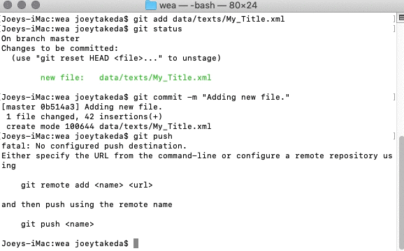
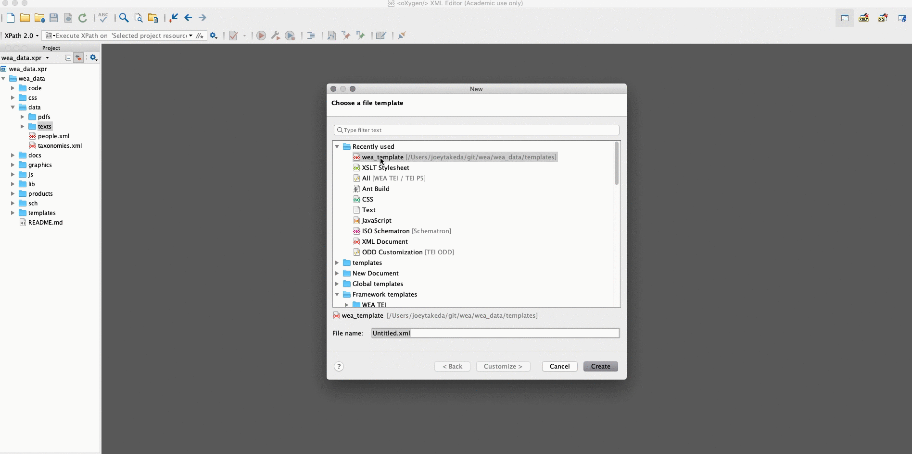
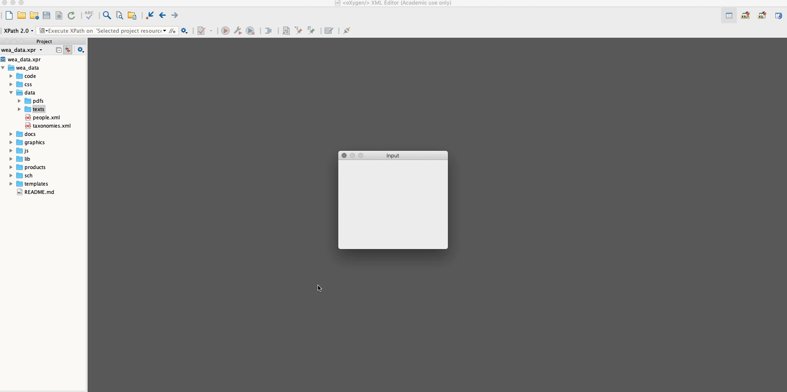

The following are the Guidelines and schema specification for the Winnifred Eaton Archive project (WEA). The project uses a highly constrained version of the TEI Guidelines; the texts are lightly encoded with very little linked data. Primarily, the texts are meant to be easily ported into an existing Omeka framework; the details of this framework are still in development.
2 Requirements
To edit material for the site, you will need to use a computer with the following software:
Git (to get data from and commit data to the repository). Most computers come with git automatically installed. To check this, open the Command Line (Windows) / Terminal (Mac/Linux) and type in git --version. If you get something like this in response: git version 2.17.2 (Apple Git-113), then you have Git installed. Otherwise, follow the instructions here.
oXygen XML Editor. (For current RAs, talk to Mary Chapman about licensing.)
You must also set up a free Github account here. It will be connected to your email address; once the Github account is set up, let the repository owner (currently Joey Takeda) know the email address used so that they can grant you write access to the repository.
3 Using Github
All of the data for the project is kept in a Git repository that is hosted through Github. Git is a version control system, which means that one could "roll back" the site to any particular version, and retrieve any file at any state of editing. Note that Github is a public repository, so all of the data and commit messages you make are visible to anyone. Our Github repository URL is https://github.com/winnifredeatonarchive/wea_data.
3.1 Setting up the repository
To get the data, you must first checkout a copy of the repository as follows:
Open the terminal
Create a directory for working in: mkdir wea
Go into the directory: cd wea
Initialize the repository: git init .
Pull the repository: git pull https://github.com/winnifredeatonarchive/wea_data
Note that you only need to do this the first time you start working in the Github repository.
3.2 The Github Workflow
The normal workflow for working in Github (and any version software) is as follows:
Update your repository so that any changes made by others are pushed into your local system
Commit the items to the repository
Push those items to the Github interface
3.2.1 Updating
Make sure to update as often as possible; always update at the beginning of your working session.
To update:
Go into your working folder: cd wea
Pull the repository: git pull
3.2.2 Committing
Unlike some versioning systems, Github requires three steps for committing/saving your work to the repository.
First, check the status of your files to see what you have changed since your last commit: git status If there are no changes to the repository, then you'll like see something like this: On branch master nothing to commit, working tree clean If there are changes, you should see something like this: On branch master Changes not staged for commit: (use "git add <file>..." to update what will be committed) (use "git checkout -- <file>..." to discard changes in working directory) modified: README.md no changes added to commit (use "git add" and/or "git commit -a")
If there are changes, then add the files/folders that you want to commit to the repository. git add README.md
Third, commit the files to the repository, including a commit message that explains what you did: git commit -m "Encoding a new poem."
Fourth, push the files to the repository: git push Note that, if you are committing for the first time, you'll like see something like this: Either specify the URL from the command-line or configure a remote repository using git remote add <name> <url> and then push using the remote name git push <name> This means that you must set up your local copy to track the changes in the global repository. To do that, simply follow the above instructions like so: git remote add wea https://github.com/winnifredeatonarchive/wea_datagit push wea You'll then like get another message, saying something like: fatal: The current branch master has no upstream branch. To push the current branch and set the remote as upstream, use git push --set-upstream wea master To resolve that, simply: git push --set-upstream wea master You may then be prompted for your username and password; if this is your first commit, then it might give your instructions on how to store those credentials in your local git system so that you do not need to add your username and password every time you commit.
4 Creating a New Text in oXygen
To create a new text file, use the built in text template
First, in the project view in oXygen, right click the data/texts folder and click "Add new file"
Select "wea_template.xml" and give your file a name. The name should be two or three words, separated with underscores.

Answer the prompts, filling in the (modernized) title of the text and your @xml:id.
Fill in any information--including who transcribed the file and who copy-edited the file--in the teiHeader.

5 Building the Schema
All constraints and documentation are contained within the ODD file, including the RelaxNG schema, the schematron file, and the compiled schematron XSLT.
To regenerate the schema and the documentation follow these directions
In oXygen: Simply open the ODD file in the oXygen project file and press the red "play" button.
Command line: in the root project directory (wea_data), run: ant -lib lib -f code/buildSchemas.xml Note that you must have ant installed.
Appendix A
Schema wea: Elements
<abstract>
<abstract> contains a summary or formal abstract prefixed to an existing source document by the encoder. [2.4.4. Abstracts]
This element is intended only for cases where no abstract is available in the original source. Any abstract already present in the source document should be encoded as a div within the front, as it should for a born-digital document.
Example
<profileDesc> <abstract resp="#LB"> <p>Good database design involves the acquisition and deployment of skills which have a wider relevance to the educational process. From a set of more or less instinctive rules of thumb a formal discipline or "methodology" of database design has evolved. Applying that methodology can be of great benefit to a very wide range of academic subjects: it requires fundamental skills of abstraction and generalisation and it provides a simple mechanism whereby complex ideas and information structures can be represented and manipulated, even without the use of a computer. </p> </abstract> </profileDesc>
As an alternative to using the scheme attribute a namespace prefix may be used. Where both scheme and a prefix are used, the prefix takes precedence.
Example
<p>The TEI defines several <soCalled>global</soCalled> attributes; their names include <att>xml:id</att>, <att>rend</att>, <att>xml:lang</att>, <att>n</att>, <att>xml:space</att>, and <att>xml:base</att>; <att scheme="XX">type</att> is not amongst them.</p>
<author> in a bibliographic reference, contains the name(s) of an author, personal or corporate, of a work; for example in the same form as that provided by a recognized bibliographic name authority. [3.11.2.2. Titles, Authors, and Editors 2.2.1. The Title Statement]
Particularly where cataloguing is likely to be based on the content of the header, it is advisable to use a generally recognized name authority file to supply the content for this element. The attributes key or ref may also be used to reference canonical information about the author(s) intended from any appropriate authority, such as a library catalogue or online resource.
In the case of a broadcast, use this element for the name of the company or network responsible for making the broadcast.
Where an author is unknown or unspecified, this element may contain text such as Unknown or Anonymous. When the appropriate TEI modules are in use, it may also contain detailed tagging of the names used for people, organizations or places, in particular where multiple names are given.
Example
<author>British Broadcasting Corporation</author> <author>La Fayette, Marie Madeleine Pioche de la Vergne, comtesse de (1634–1693)</author> <author>Anonymous</author> <author>Bill and Melinda Gates Foundation</author> <author> <persName>Beaumont, Francis</persName> and <persName>John Fletcher</persName> </author> <author> <orgName key="BBC">British Broadcasting Corporation</orgName>: Radio 3 Network </author>
<authority> (release authority) supplies the name of a person or other agency responsible for making a work available, other than a publisher or distributor. [2.2.4. Publication, Distribution, Licensing, etc.]
<availability> supplies information about the availability of a text, for example any restrictions on its use or distribution, its copyright status, any licence applying to it, etc. [2.2.4. Publication, Distribution, Licensing, etc.]
<availability status="restricted"> <p>Available for academic research purposes only.</p> </availability> <availability status="free"> <p>In the public domain</p> </availability> <availability status="restricted"> <p>Available under licence from the publishers.</p> </availability>
Example
<availability> <licence target="http://opensource.org/licenses/MIT"> <p>The MIT License applies to this document.</p> <p>Copyright (C) 2011 by The University of Victoria</p> <p>Permission is hereby granted, free of charge, to any person obtaining a copy of this software and associated documentation files (the "Software"), to deal in the Software without restriction, including without limitation the rights to use, copy, modify, merge, publish, distribute, sublicense, and/or sell copies of the Software, and to permit persons to whom the Software is furnished to do so, subject to the following conditions:</p> <p>The above copyright notice and this permission notice shall be included in all copies or substantial portions of the Software.</p> <p>THE SOFTWARE IS PROVIDED "AS IS", WITHOUT WARRANTY OF ANY KIND, EXPRESS OR IMPLIED, INCLUDING BUT NOT LIMITED TO THE WARRANTIES OF MERCHANTABILITY, FITNESS FOR A PARTICULAR PURPOSE AND NONINFRINGEMENT. IN NO EVENT SHALL THE AUTHORS OR COPYRIGHT HOLDERS BE LIABLE FOR ANY CLAIM, DAMAGES OR OTHER LIABILITY, WHETHER IN AN ACTION OF CONTRACT, TORT OR OTHERWISE, ARISING FROM, OUT OF OR IN CONNECTION WITH THE SOFTWARE OR THE USE OR OTHER DEALINGS IN THE SOFTWARE.</p> </licence> </availability>
Because cultural conventions differ as to which elements are grouped as back matter and which as front matter, the content models for the back and front elements are identical.
Example
<back> <div type="appendix"> <head>The Golden Dream or, the Ingenuous Confession</head> <p>TO shew the Depravity of human Nature, and how apt the Mind is to be misled by Trinkets and false Appearances, Mrs. Two-Shoes does acknowledge, that after she became rich, she had like to have been, too fond of Money <!-- .... --> </p> </div> <!-- ... --> <div type="epistle"> <head>A letter from the Printer, which he desires may be inserted</head> <salute>Sir.</salute> <p>I have done with your Copy, so you may return it to the Vatican, if you please;
<!-- ... --> </p> </div> <div type="advert"> <head>The Books usually read by the Scholars of Mrs Two-Shoes are these and are sold at Mr Newbery's at the Bible and Sun in St Paul's Church-yard.</head> <list> <item n="1">The Christmas Box, Price 1d.</item> <item n="2">The History of Giles Gingerbread, 1d.</item> <!-- ... --> <item n="42">A Curious Collection of Travels, selected from the Writers of all Nations, 10 Vol, Pr. bound 1l.</item> </list> </div> <div type="advert"> <head>By the KING's Royal Patent, Are sold by J. NEWBERY, at the Bible and Sun in St. Paul's Church-Yard.</head> <list> <item n="1">Dr. James's Powders for Fevers, the Small-Pox, Measles, Colds, &c. 2s. 6d</item> <item n="2">Dr. Hooper's Female Pills, 1s.</item> <!-- ... --> </list> </div> </back>
<bibl> (bibliographic citation) contains a loosely-structured bibliographic citation of which the sub-components may or may not be explicitly tagged. [3.11.1. Methods of Encoding Bibliographic References and Lists of References 2.2.7. The Source Description 15.3.2. Declarable Elements]
Contains phrase-level elements, together with any combination of elements from the model.biblPart class
Example
<bibl>Blain, Clements and Grundy: Feminist Companion to Literature in English (Yale, 1990)</bibl>
Example
<bibl> <title level="a">The Interesting story of the Children in the Wood</title>. In <author>Victor E Neuberg</author>, <title>The Penny Histories</title>. <publisher>OUP</publisher> <date>1968</date>. </bibl>
Example
<bibl type="article" subtype="book_chapter" xml:id="carlin_2003"> <author> <name> <surname>Carlin</surname> (<forename>Claire</forename>)</name> </author>, <title level="a">The Staging of Impotence : France’s last congrès</title> dans <bibl type="monogr"> <title level="m">Theatrum mundi : studies in honor of Ronald W. Tobin</title>, éd. <editor> <name> <forename>Claire</forename> <surname>Carlin</surname> </name> </editor> et <editor> <name> <forename>Kathleen</forename> <surname>Wine</surname> </name> </editor>, <pubPlace>Charlottesville, Va.</pubPlace>, <publisher>Rookwood Press</publisher>, <date when="2003">2003</date>. </bibl> </bibl>
<biblFull> (fully-structured bibliographic citation) contains a fully-structured bibliographic citation, in which all components of the TEI file description are present. [3.11.1. Methods of Encoding Bibliographic References and Lists of References 2.2. The File Description 2.2.7. The Source Description 15.3.2. Declarable Elements]
<biblFull> <titleStmt> <title>The Feminist Companion to Literature in English: women writers from the middle ages to the present</title> <author>Blain, Virginia</author> <author>Clements, Patricia</author> <author>Grundy, Isobel</author> </titleStmt> <editionStmt> <edition>UK edition</edition> </editionStmt> <extent>1231 pp</extent> <publicationStmt> <publisher>Yale University Press</publisher> <pubPlace>New Haven and London</pubPlace> <date>1990</date> </publicationStmt> <sourceDesc> <p>No source: this is an original work</p> </sourceDesc> </biblFull>
<byline> contains the primary statement of responsibility given for a work on its title page or at the head or end of the work. [4.2.2. Openers and Closers 4.5. Front Matter]
The byline on a title page may include either the name or a description for the document's author. Where the name is included, it may optionally be tagged using the docAuthor element.
Example
<byline>Written by a CITIZEN who continued all the while in London. Never made publick before.</byline>
Example
<byline>Written from her own MEMORANDUMS</byline>
Example
<byline>By George Jones, Political Editor, in Washington</byline>
Example
<byline>BY <docAuthor>THOMAS PHILIPOTT,</docAuthor> Master of Arts, (Somtimes) Of Clare-Hall in Cambridge.</byline>
<catDesc> (category description) describes some category within a taxonomy or text typology, either in the form of a brief prose description or in terms of the situational parameters used by the TEI formal <textDesc>. [2.3.7. The Classification Declaration]
<category> contains an individual descriptive category, possibly nested within a superordinate category, within a user-defined taxonomy. [2.3.7. The Classification Declaration]
identifies the classification scheme within which the set of categories concerned is defined, for example by a taxonomy element, or by some other resource.
<change> documents a change or set of changes made during the production of a source document, or during the revision of an electronic file. [2.6. The Revision Description 2.4.1. Creation 11.7. Identifying Changes and Revisions]
The who attribute may be used to point to any other element, but will typically specify a respStmt or <person> element elsewhere in the header, identifying the person responsible for the change and their role in making it.
It is recommended that changes be recorded with the most recent first. The status attribute may be used to indicate the status of a document following the change documented.
Because the children of a choice element all represent alternative ways of encoding the same sequence, it is natural to think of them as mutually exclusive. However, there may be cases where a full representation of a text requires the alternative encodings to be considered as parallel.
Where the purpose of an encoding is to record multiple witnesses of a single work, rather than to identify multiple possible encoding decisions at a given point, the <app> element and associated elements discussed in section 12.1. The Apparatus Entry, Readings, and Witnesses should be preferred.
Example
An American encoding of Gulliver's Travels which retains the British spelling but also provides a version regularized to American spelling might be encoded as follows.
<p>Lastly, That, upon his solemn oath to observe all the above articles, the said man-mountain shall have a daily allowance of meat and drink sufficient for the support of <choice> <sic>1724</sic> <corr>1728</corr> </choice> of our subjects, with free access to our royal person, and other marks of our <choice> <orig>favour</orig> <reg>favor</reg> </choice>.</p>
<classDecl> (classification declarations) contains one or more taxonomies defining any classificatory codes used elsewhere in the text. [2.3.7. The Classification Declaration 2.3. The Encoding Description]
<closer> groups together salutations, datelines, and similar phrases appearing as a final group at the end of a division, especially of a letter. [4.2.2. Openers and Closers 4.2. Elements Common to All Divisions]
<div type="letter"> <p> perhaps you will favour me with a sight of it when convenient.</p> <closer> <salute>I remain, &c. &c.</salute> <signed>H. Colburn</signed> </closer> </div>
Example
<div type="chapter"> <p> <!-- ... --> and his heart was going like mad and yes I said yes I will Yes.</p> <closer> <dateline> <name type="place">Trieste-Zürich-Paris,</name> <date>1914–1921</date> </dateline> </closer> </div>
The creation element may be used to record details of a text's creation, e.g. the date and place it was composed, if these are of interest.
It may also contain a more structured account of the various stages or revisions associated with the evolution of a text; this should be encoded using the listChange element. It should not be confused with the publicationStmt element, which records date and place of publication.
Example
<creation> <date>Before 1987</date> </creation>
Example
<creation> <date when="1988-07-10">10 July 1988</date> </creation>
<date> contains a date in any format. [3.5.4. Dates and Times 2.2.4. Publication, Distribution, Licensing, etc. 2.6. The Revision Description 3.11.2.4. Imprint, Size of a Document, and Reprint Information 15.2.3. The Setting Description 13.3.7. Dates and Times]
Given on the <date when="1977-06-12">Twelfth Day of June in the Year of Our Lord One Thousand Nine Hundred and Seventy-seven of the Republic the Two Hundredth and first and of the University the Eighty-Sixth.</date>
<dateline> contains a brief description of the place, date, time, etc. of production of a letter, newspaper story, or other work, prefixed or suffixed to it as a kind of heading or trailer. [4.2.2. Openers and Closers]
<dateline>Walden, this 29. of August 1592</dateline>
Example
<div type="chapter"> <p> <!-- ... --> and his heart was going like mad and yes I said yes I will Yes.</p> <closer> <dateline> <name type="place">Trieste-Zürich-Paris,</name> <date>1914–1921</date> </dateline> </closer> </div>
<distributor> supplies the name of a person or other agency responsible for the distribution of a text. [2.2.4. Publication, Distribution, Licensing, etc.]
<body> <div type="part"> <head>Fallacies of Authority</head> <p>The subject of which is Authority in various shapes, and the object, to repress all exercise of the reasoning faculty.</p> <div n="1" type="chapter"> <head>The Nature of Authority</head> <p>With reference to any proposed measures having for their object the greatest happiness of the greatest number [...]</p> <div n="1.1" type="section"> <head>Analysis of Authority</head> <p>What on any given occasion is the legitimate weight or influence to be attached to authority [...] </p> </div> <div n="1.2" type="section"> <head>Appeal to Authority, in What Cases Fallacious.</head> <p>Reference to authority is open to the charge of fallacy when [...] </p> </div> </div> </div> </body>
Schematron
<s:report test="ancestor::tei:l"> Abstract model violation: Lines may not contain higher-level structural elements such as div. </s:report>
Schematron
<s:report test="ancestor::tei:p or ancestor::tei:ab and not(ancestor::tei:floatingText)"> Abstract model violation: p and ab may not contain higher-level structural elements such as div. </s:report>
<docAuthor> (document author) contains the name of the author of the document, as given on the title page (often but not always contained in a byline). [4.6. Title Pages]
The document author's name often occurs within a byline, but the docAuthor element may be used whether the byline element is used or not. It should be used only for the author(s) of the entire document, not for author(s) of any subset or part of it. (Attributions of authorship of a subset or part of the document, for example of a chapter in a textbook or an article in a newspaper, may be encoded with byline without docAuthor.)
Example
<titlePage> <docTitle> <titlePart>Travels into Several Remote Nations of the World, in Four Parts.</titlePart> </docTitle> <byline> By <docAuthor>Lemuel Gulliver</docAuthor>, First a Surgeon, and then a Captain of several Ships</byline> </titlePage>
For simple dates, the when attribute should give the Gregorian or proleptic Gregorian date in one of the formats specified in XML Schema Part 2: Datatypes Second Edition.
Cf. the general date element in the core tag set. This specialized element is provided for convenience in marking and processing the date of the documents, since it is likely to require specialized handling for many applications. It should be used only for the date of the entire document, not for any subset or part of it.
<editor> contains a secondary statement of responsibility for a bibliographic item, for example the name of an individual, institution or organization, (or of several such) acting as editor, compiler, translator, etc. [3.11.2.2. Titles, Authors, and Editors]
Particularly where cataloguing is likely to be based on the content of the header, it is advisable to use generally recognized authority lists for the exact form of personal names.
Example
<editor role="Technical_Editor">Ron Van den Branden</editor> <editor role="Editor-in-Chief">John Walsh</editor> <editor role="Managing_Editor">Anne Baillot</editor>
<editorialDecl> (editorial practice declaration) provides details of editorial principles and practices applied during the encoding of a text. [2.3.3. The Editorial Practices Declaration 2.3. The Encoding Description 15.3.2. Declarable Elements]
<editorialDecl> <normalization> <p>All words converted to Modern American spelling using Websters 9th Collegiate dictionary </p> </normalization> <quotation marks="all"> <p>All opening quotation marks converted to “ all closing quotation marks converted to &cdq;.</p> </quotation> </editorialDecl>
<emph> (emphasized) marks words or phrases which are stressed or emphasized for linguistic or rhetorical effect. [3.3.2.2. Emphatic Words and Phrases 3.3.2. Emphasis, Foreign Words, and Unusual Language]
<encodingDesc> (encoding description) documents the relationship between an electronic text and the source or sources from which it was derived. [2.3. The Encoding Description 2.1.1. The TEI Header and Its Components]
<encodingDesc> <p>Basic encoding, capturing lexical information only. All hyphenation, punctuation, and variant spellings normalized. No formatting or layout information preserved.</p> </encodingDesc>
<epigraph> contains a quotation, anonymous or attributed, appearing at the start or end of a section or on a title page. [4.2.3. Arguments, Epigraphs, and Postscripts 4.2. Elements Common to All Divisions 4.6. Title Pages]
<fileDesc> (file description) contains a full bibliographic description of an electronic file. [2.2. The File Description 2.1.1. The TEI Header and Its Components]
The major source of information for those seeking to create a catalogue entry or bibliographic citation for an electronic file. As such, it provides a title and statements of responsibility together with details of the publication or distribution of the file, of any series to which it belongs, and detailed bibliographic notes for matters not addressed elsewhere in the header. It also contains a full bibliographic description for the source or sources from which the electronic text was derived.
Example
<fileDesc> <titleStmt> <title>The shortest possible TEI document</title> </titleStmt> <publicationStmt> <p>Distributed as part of TEI P5</p> </publicationStmt> <sourceDesc> <p>No print source exists: this is an original digital text</p> </sourceDesc> </fileDesc>
The global xml:lang attribute should be supplied for this element to identify the language of the word or phrase marked. As elsewhere, its value should be a language tag as defined in 6.1. Language Identification.
This element is intended for use only where no other element is available to mark the phrase or words concerned. The global xml:lang attribute should be used in preference to this element where it is intended to mark the language of the whole of some text element.
The <distinct> element may be used to identify phrases belonging to sublanguages or registers not generally regarded as true languages.
Example
This is heathen Greek to you still? Your <foreign xml:lang="la">lapis philosophicus</foreign>?
<front> (front matter) contains any prefatory matter (headers, abstracts, title page, prefaces, dedications, etc.) found at the start of a document, before the main body. [4.6. Title Pages 4. Default Text Structure]
Because cultural conventions differ as to which elements are grouped as front matter and which as back matter, the content models for the front and back elements are identical.
Example
<front> <epigraph> <quote>Nam Sibyllam quidem Cumis ego ipse oculis meis vidi in ampulla pendere, et cum illi pueri dicerent: <q xml:lang="gr">Σίβυλλα τί θέλεις</q>; respondebat illa: <q xml:lang="gr">ὰποθανεῖν θέλω.</q> </quote> </epigraph> <div type="dedication"> <p>For Ezra Pound <q xml:lang="it">il miglior fabbro.</q> </p> </div> </front>
Example
<front> <div type="dedication"> <p>To our three selves</p> </div> <div type="preface"> <head>Author's Note</head> <p>All the characters in this book are purely imaginary, and if the author has used names that may suggest a reference to living persons she has done so inadvertently. ...</p> </div> </front>
Example
<front> <div type="abstract"> <div> <head> BACKGROUND:</head> <p>Food insecurity can put children at greater risk of obesity because of altered food choices and nonuniform consumption patterns.</p> </div> <div> <head> OBJECTIVE:</head> <p>We examined the association between obesity and both child-level food insecurity and personal food insecurity in US children.</p> </div> <div> <head> DESIGN:</head> <p>Data from 9,701 participants in the National Health and Nutrition Examination Survey, 2001-2010, aged 2 to 11 years were analyzed. Child-level food insecurity was assessed with the US Department of Agriculture's Food Security Survey Module based on eight child-specific questions. Personal food insecurity was assessed with five additional questions. Obesity was defined, using physical measurements, as body mass index (calculated as kg/m2) greater than or equal to the age- and sex-specific 95th percentile of the Centers for Disease Control and Prevention growth charts. Logistic regressions adjusted for sex, race/ethnic group, poverty level, and survey year were conducted to describe associations between obesity and food insecurity.</p> </div> <div> <head> RESULTS:</head> <p>Obesity was significantly associated with personal food insecurity for children aged 6 to 11 years (odds ratio=1.81; 95% CI 1.33 to 2.48), but not in children aged 2 to 5 years (odds ratio=0.88; 95% CI 0.51 to 1.51). Child-level food insecurity was not associated with obesity among 2- to 5-year-olds or 6- to 11-year-olds.</p> </div> <div> <head> CONCLUSIONS:</head> <p>Personal food insecurity is associated with an increased risk of obesity only in children aged 6 to 11 years. Personal food-insecurity measures may give different results than aggregate food-insecurity measures in children.</p> </div> </div> </front>
<gap> indicates a point where material has been omitted in a transcription, whether for editorial reasons described in the TEI header, as part of sampling practice, or because the material is illegible, invisible, or inaudible. [3.4.3. Additions, Deletions, and Omissions]
The gap tag simply signals the editors decision to omit or inability to transcribe a span of text. Other information, such as the interpretation that text was deliberately erased or covered, should be indicated using the relevant tags, such as <del> in the case of deliberate deletion.
<p>The <gi>xhtml:li</gi> element is roughly analogous to the <gi>item</gi> element, as is the <gi scheme="DBK">listItem</gi> element.</p>
This example shows the use of both a namespace prefix and the scheme attribute as alternative ways of indicating that the gi in question is not a TEI element name: in practice only one method should be adopted.
<head> (heading) contains any type of heading, for example the title of a section, or the heading of a list, glossary, manuscript description, etc. [4.2.1. Headings and Trailers]
The head element is used for headings at all levels; software which treats (e.g.) chapter headings, section headings, and list titles differently must determine the proper processing of a head element based on its structural position. A head occurring as the first element of a list is the title of that list; one occurring as the first element of a <div1> is the title of that chapter or section.
Example
The most common use for the head element is to mark the headings of sections. In older writings, the headings or incipits may be rather longer than usual in modern works. If a section has an explicit ending as well as a heading, it should be marked as a trailer, as in this example:
<div1 n="I" type="book"> <head>In the name of Christ here begins the first book of the ecclesiastical history of Georgius Florentinus, known as Gregory, Bishop of Tours.</head> <div2 type="section"> <head>In the name of Christ here begins Book I of the history.</head> <p>Proposing as I do ...</p> <p>From the Passion of our Lord until the death of Saint Martin four hundred and twelve years passed.</p> <trailer>Here ends the first Book, which covers five thousand, five hundred and ninety-six years from the beginning of the world down to the death of Saint Martin.</trailer> </div2> </div1>
Example
When headings are not inline with the running text (see e.g. the heading "Secunda conclusio") they might however be encoded as if. The actual placement in the source document can be captured with the place attribute.
<div type="subsection"> <head place="margin">Secunda conclusio</head> <p> <lb n="1251"/> <hi rend="large">Potencia: habitus: et actus: recipiunt speciem ab obiectis<supplied>.</supplied> </hi> <lb n="1252"/>Probatur sic. Omne importans necessariam habitudinem ad proprium [...] </p> </div>
Example
The head element is also used to mark headings of other units, such as lists:
With a few exceptions, connectives are equally useful in all kinds of discourse: description, narration, exposition, argument. <list rend="bulleted"> <head>Connectives</head> <item>above</item> <item>accordingly</item> <item>across from</item> <item>adjacent to</item> <item>again</item> <item> <!-- ... --> </item> </list>
<hi> (highlighted) marks a word or phrase as graphically distinct from the surrounding text, for reasons concerning which no claim is made. [3.3.2.2. Emphatic Words and Phrases 3.3.2. Emphasis, Foreign Words, and Unusual Language]
<hi rend="gothic">And this Indenture further witnesseth</hi> that the said <hi rend="italic">Walter Shandy</hi>, merchant, in consideration of the said intended marriage ...
<hyphenation> summarizes the way in which hyphenation in a source text has been treated in an encoded version of it. [2.3.3. The Editorial Practices Declaration 15.3.2. Declarable Elements]
<idno> (identifier) supplies any form of identifier used to identify some object, such as a bibliographic item, a person, a title, an organization, etc. in a standardized way. [2.2.4. Publication, Distribution, Licensing, etc. 2.2.5. The Series Statement 3.11.2.4. Imprint, Size of a Document, and Reprint Information]
International Standard Book Number: a 13- or (if assigned prior to 2007) 10-digit identifying number assigned by the publishing industry to a published book or similar item, registered with the International ISBN Agency.
ISSN
International Standard Serial Number: an eight-digit number to uniquely identify a serial publication.
DOI
Digital Object Identifier: a unique string of letters and numbers assigned to an electronic document.
URI
Uniform Resource Identifier: a string of characters to uniquely identify a resource which usually contains indication of the means of accessing that resource, the name of its host, and its filepath.
VIAF
A data number in the Virtual Internet Authority File assigned to link different names in catalogs around the world for the same entity.
ESTC
English Short-Title Catalogue number: an identifying number assigned to a document in English printed in the British Isles or North America before 1801.
OCLC
OCLC control number (record number) for the union catalog record in WorldCat, a union catalog for member libraries in the Online Computer Library Center global cooperative.
idno should be used for labels which identify an object or concept in a formal cataloguing system such as a database or an RDF store, or in a distributed system such as the World Wide Web. Some suggested values for type on idno are ISBN, ISSN, DOI, and URI.
In the last case, the identifier includes a non-Unicode character which is defined elsewhere by means of a <glyph> or <char> element referenced here as #sym.
Whatever string of characters is used to label a list item in the copy text may be used as the value of the global n attribute, but it is not required that numbering be recorded explicitly. In ordered lists, the n attribute on the item element is by definition synonymous with the use of the <label> element to record the enumerator of the list item. In glossary lists, however, the term being defined should be given with the <label> element, not n.
Example
<list rend="numbered"> <head>Here begin the chapter headings of Book IV</head> <item n="4.1">The death of Queen Clotild.</item> <item n="4.2">How King Lothar wanted to appropriate one third of the Church revenues.</item> <item n="4.3">The wives and children of Lothar.</item> <item n="4.4">The Counts of the Bretons.</item> <item n="4.5">Saint Gall the Bishop.</item> <item n="4.6">The priest Cato.</item> <item> ...</item> </list>
<l> (verse line) contains a single, possibly incomplete, line of verse. [3.12.1. Core Tags for Verse 3.12. Passages of Verse or Drama 7.2.5. Speech Contents]
<l met="x/x/x/x/x/" real="/xx/x/x/x/">Shall I compare thee to a summer's day?</l>
Schematron
<s:report test="ancestor::tei:l[not(.//tei:note//tei:l[. = current()])]"> Abstract model violation: Lines may not contain lines or lg elements. </s:report>
(identifier) Supplies a language code constructed as defined in BCP 47 which is used to identify the language documented by this element, and which is referenced by the global xml:lang attribute.
<langUsage> (language usage) describes the languages, sublanguages, registers, dialects, etc. represented within a text. [2.4.2. Language Usage 2.4. The Profile Description 15.3.2. Declarable Elements]
<lb> (line beginning) marks the beginning of a new (typographic) line in some edition or version of a text. [3.10.3. Milestone
Elements 7.2.5. Speech Contents]
By convention, lb elements should appear at the point in the text where a new line starts. The n attribute, if used, indicates the number or other value associated with the text between this point and the next lb element, typically the sequence number of the line within the page, or other appropriate unit. This element is intended to be used for marking actual line breaks on a manuscript or printed page, at the point where they occur; it should not be used to tag structural units such as lines of verse (for which the l element is available) except in circumstances where structural units cannot otherwise be marked.
The type attribute may be used to characterize the line break in any respect. The more specialized attributes break, ed, or edRef should be preferred when the intent is to indicate whether or not the line break is word-breaking, or to note the source from which it derives.
Example
This example shows typographical line breaks within metrical lines, where they occur at different places in different editions:
<l>Of Mans First Disobedience,<lb ed="1674"/> and<lb ed="1667"/> the Fruit</l> <l>Of that Forbidden Tree, whose<lb ed="1667 1674"/> mortal tast</l> <l>Brought Death into the World,<lb ed="1667"/> and all<lb ed="1674"/> our woe,</l>
Example
This example encodes typographical line breaks as a means of preserving the visual appearance of a title page. The break attribute is used to show that the line break does not (as elsewhere) mark the start of a new word.
<titlePart> <lb/>With Additions, ne-<lb break="no"/>ver before Printed. </titlePart>
<lg> (line group) contains one or more verse lines functioning as a formal unit, e.g. a stanza, refrain, verse paragraph, etc. [3.12.1. Core Tags for Verse 3.12. Passages of Verse or Drama 7.2.5. Speech Contents]
contains verse lines or nested line groups only, possibly prefixed by a heading.
Example
<lg type="free"> <l>Let me be my own fool</l> <l>of my own making, the sum of it</l> </lg> <lg type="free"> <l>is equivocal.</l> <l>One says of the drunken farmer:</l> </lg> <lg type="free"> <l>leave him lay off it. And this is</l> <l>the explanation.</l> </lg>
Schematron
<sch:assert test="count(descendant::tei:lg|descendant::tei:l|descendant::tei:gap) >
0">An lg element must contain at least one child l, lg or gap element.</sch:assert>
Schematron
<s:report test="ancestor::tei:l[not(.//tei:note//tei:lg[. = current()])]"> Abstract model violation: Lines may not contain line groups. </s:report>
A licence element should be supplied for each licence agreement applicable to the text in question. The target attribute may be used to reference a full version of the licence. The when, notBefore, notAfter, from or to attributes may be used in combination to indicate the date or dates of applicability of the licence.
<availability> <licence target="http://creativecommons.org/licenses/by/3.0/" notBefore="2013-01-01"> <p>The Creative Commons Attribution 3.0 Unported (CC BY 3.0) Licence applies to this document.</p> <p>The licence was added on January 1, 2013.</p> </licence> </availability>
each list item glosses some term or concept, which is given by a <label> element preceding the list item.
index
each list item is an entry in an index such as the alphabetical topical index at the back of a print volume.
instructions
each list item is a step in a sequence of instructions, as in a recipe.
litany
each list item is one of a sequence of petitions, supplications or invocations, typically in a religious ritual.
syllogism
each list item is part of an argument consisting of two or more propositions and a final conclusion derived from them.
Note
Previous versions of these Guidelines recommended the use of type on list to encode the rendering or appearance of a list (whether it was bulleted, numbered, etc.). The current recommendation is to use the rend or style attributes for these aspects of a list, while using type for the more appropriate task of characterizing the nature of the content of a list.
Note
The formal syntax of the element declarations allows <label> tags to be omitted from lists tagged <list type="gloss">; this is however a semantic error.
May contain an optional heading followed by a series of items, or a series of label and item pairs, the latter being optionally preceded by one or two specialized headings.
Example
<list rend="numbered"> <item>a butcher</item> <item>a baker</item> <item>a candlestick maker, with <list rend="bulleted"> <item>rings on his fingers</item> <item>bells on his toes</item> </list> </item> </list>
Example
<list type="syllogism" rend="bulleted"> <item>All Cretans are liars.</item> <item>Epimenides is a Cretan.</item> <item>ERGO Epimenides is a liar.</item> </list>
Example
<list type="litany" rend="simple"> <item>God save us from drought.</item> <item>God save us from pestilence.</item> <item>God save us from wickedness in high places.</item> <item>Praise be to God.</item> </list>
Example
The following example treats the short numbered clauses of Anglo-Saxon legal codes as lists of items. The text is from an ordinance of King Athelstan (924–939):
<div1 type="section"> <head>Athelstan's Ordinance</head> <list rend="numbered"> <item n="1">Concerning thieves. First, that no thief is to be spared who is caught with the stolen goods, [if he is] over twelve years and [if the value of the goods is] over eightpence. <list rend="numbered"> <item n="1.1">And if anyone does spare one, he is to pay for the thief with his wergild — and the thief is to be no nearer a settlement on that account — or to clear himself by an oath of that amount.</item> <item n="1.2">If, however, he [the thief] wishes to defend himself or to escape, he is not to be spared [whether younger or older than twelve].</item> <item n="1.3">If a thief is put into prison, he is to be in prison 40 days, and he may then be redeemed with 120 shillings; and the kindred are to stand surety for him that he will desist for ever.</item> <item n="1.4">And if he steals after that, they are to pay for him with his wergild, or to bring him back there.</item> <item n="1.5">And if he steals after that, they are to pay for him with his wergild, whether to the king or to him to whom it rightly belongs; and everyone of those who supported him is to pay 120 shillings to the king as a fine.</item> </list> </item> <item n="2">Concerning lordless men. And we pronounced about these lordless men, from whom no justice can be obtained, that one should order their kindred to fetch back such a person to justice and to find him a lord in public meeting. <list rend="numbered"> <item n="2.1">And if they then will not, or cannot, produce him on that appointed day, he is then to be a fugitive afterwards, and he who encounters him is to strike him down as a thief.</item> <item n="2.2">And he who harbours him after that, is to pay for him with his wergild or to clear himself by an oath of that amount.</item> </list> </item> <item n="3">Concerning the refusal of justice. The lord who refuses justice and upholds his guilty man, so that the king is appealed to, is to repay the value of the goods and 120 shillings to the king; and he who appeals to the king before he demands justice as often as he ought, is to pay the same fine as the other would have done, if he had refused him justice. <list rend="numbered"> <item n="3.1">And the lord who is an accessory to a theft by his slave, and it becomes known about him, is to forfeit the slave and be liable to his wergild on the first occasionp if he does it more often, he is to be liable to pay all that he owns.</item> <item n="3.2">And likewise any of the king's treasurers or of our reeves, who has been an accessory of thieves who have committed theft, is to liable to the same.</item> </list> </item> <item n="4">Concerning treachery to a lord. And we have pronounced concerning treachery to a lord, that he [who is accused] is to forfeit his life if he cannot deny it or is afterwards convicted at the three-fold ordeal.</item> </list> </div1>
Note that nested lists have been used so the tagging mirrors the structure indicated by the two-level numbering of the clauses. The clauses could have been treated as a one-level list with irregular numbering, if desired.
Example
<p>These decrees, most blessed Pope Hadrian, we propounded in the public council ... and they confirmed them in our hand in your stead with the sign of the Holy Cross, and afterwards inscribed with a careful pen on the paper of this page, affixing thus the sign of the Holy Cross. <list rend="simple"> <item>I, Eanbald, by the grace of God archbishop of the holy church of York, have subscribed to the pious and catholic validity of this document with the sign of the Holy Cross.</item> <item>I, Ælfwold, king of the people across the Humber, consenting have subscribed with the sign of the Holy Cross.</item> <item>I, Tilberht, prelate of the church of Hexham, rejoicing have subscribed with the sign of the Holy Cross.</item> <item>I, Higbald, bishop of the church of Lindisfarne, obeying have subscribed with the sign of the Holy Cross.</item> <item>I, Ethelbert, bishop of Candida Casa, suppliant, have subscribed with thef sign of the Holy Cross.</item> <item>I, Ealdwulf, bishop of the church of Mayo, have subscribed with devout will.</item> <item>I, Æthelwine, bishop, have subscribed through delegates.</item> <item>I, Sicga, patrician, have subscribed with serene mind with the sign of the Holy Cross.</item> </list> </p>
Schematron
<sch:rule context="tei:list[@type='gloss']"> <sch:assert test="tei:label">The content of a "gloss" list should include a sequence of one or more pairs of a label element followed by an item element</sch:assert> </sch:rule>
<listBibl> (citation list) contains a list of bibliographic citations of any kind. [3.11.1. Methods of Encoding Bibliographic References and Lists of References 2.2.7. The Source Description 15.3.2. Declarable Elements]
<listBibl> <head>Works consulted</head> <bibl>Blain, Clements and Grundy: Feminist Companion to Literature in English (Yale, 1990) </bibl> <biblStruct> <analytic> <title>The Interesting story of the Children in the Wood</title> </analytic> <monogr> <title>The Penny Histories</title> <author>Victor E Neuberg</author> <imprint> <publisher>OUP</publisher> <date>1968</date> </imprint> </monogr> </biblStruct> </listBibl>
<listChange> groups a number of change descriptions associated with either the creation of a source text or the revision of an encoded text. [2.6. The Revision Description 11.7. Identifying Changes and Revisions]
When this element appears within the creation element it documents the set of revision campaigns or stages identified during the evolution of the original text. When it appears within the revisionDesc element, it documents only changes made during the evolution of the encoded representation of that text.
<profileDesc> <creation> <listChange ordered="true"> <change xml:id="CHG-1">First stage, written in ink by a writer</change> <change xml:id="CHG-2">Second stage, written in Goethe's hand using pencil</change> <change xml:id="CHG-3">Fixation of the revised passages and further revisions by Goethe using ink</change> <change xml:id="CHG-4">Addition of another stanza in a different hand, probably at a later stage</change> </listChange> </creation> </profileDesc>
<listPrefixDef> (list of prefix definitions) contains a list of definitions of prefixing schemes used in data.pointer values, showing how abbreviated URIs using each scheme may be expanded into full URIs. [16.2.3. Using Abbreviated Pointers]
In this example, two private URI scheme prefixes are defined and patterns are provided for dereferencing them. Each prefix is also supplied with a human-readable explanation in a p element.
<listPrefixDef> <prefixDef ident="psn" matchPattern="([A-Z]+)" replacementPattern="personography.xml#$1"> <p> Private URIs using the <code>psn</code> prefix are pointers to <gi>person</gi> elements in the personography.xml file. For example, <code>psn:MDH</code> dereferences to <code>personography.xml#MDH</code>. </p> </prefixDef> <prefixDef ident="bibl" matchPattern="([a-z]+[a-z0-9]*)" replacementPattern="http://www.example.com/getBibl.xql?id=$1"> <p> Private URIs using the <code>bibl</code> prefix can be expanded to form URIs which retrieve the relevant bibliographical reference from www.example.com. </p> </prefixDef> </listPrefixDef>
<milestone> marks a boundary point separating any kind of section of a text, typically but not necessarily indicating a point at which some part of a standard reference system changes, where the change is not represented by a structural element. [3.10.3. Milestone
Elements]
For this element, the global n attribute indicates the new number or other value for the unit which changes at this milestone. The special value unnumbered should be used in passages which fall outside the normal numbering scheme, such as chapter or other headings, poem numbers or titles, etc.
The order in which milestone elements are given at a given point is not normally significant.
Proper nouns referring to people, places, and organizations may be tagged instead with <persName>, <placeName>, or <orgName>, when the TEI module for names and dates is included.
<note> contains a note or annotation. [3.8.1. Notes and Simple Annotation 2.2.6. The Notes Statement 3.11.2.8. Notes and Statement of Language 9.3.5.4. Notes within Entries]
In modern texts, notes are usually anchored by means of explicit footnote or endnote symbols. An explicit indication of the phrase or line annotated may however be used instead (e.g. ‘page 218, lines 3–4’). The anchored attribute indicates whether any explicit location is given, whether by symbol or by prose cross-reference. The value true indicates that such an explicit location is indicated in the copy text; the value false indicates that the copy text does not indicate a specific place of attachment for the note. If the specific symbols used in the copy text at the location the note is anchored are to be recorded, use the n attribute.
targetEnd
points to the end of the span to which the note is attached, if the note is not embedded in the text at that point.
This attribute is retained for backwards compatibility; it may be removed at a subsequent release of the Guidelines. The recommended way of pointing to a span of elements is by means of the range function of XPointer, as further described in 16.2.4.6. range().
In the following example, the translator has supplied a footnote containing an explanation of the term translated as "painterly":
And yet it is not only in the great line of Italian renaissance art, but even in the painterly <note place="bottom" type="gloss" resp="#MDMH"> <term xml:lang="de">Malerisch</term>. This word has, in the German, two distinct meanings, one objective, a quality residing in the object, the other subjective, a mode of apprehension and creation. To avoid confusion, they have been distinguished in English as <mentioned>picturesque</mentioned> and <mentioned>painterly</mentioned> respectively. </note> style of the Dutch genre painters of the seventeenth century that drapery has this psychological significance.
<!-- elsewhere in the document --> <respStmt xml:id="MDMH"> <resp>translation from German to English</resp> <name>Hottinger, Marie Donald Mackie</name> </respStmt>
For this example to be valid, the code MDMH must be defined elsewhere, for example by means of a responsibility statement in the associated TEI header.
Example
The global n attribute may be used to supply the symbol or number used to mark the note's point of attachment in the source text, as in the following example:
Mevorakh b. Saadya's mother, the matriarch of the family during the second half of the eleventh century, <note n="126" anchored="true"> The alleged mention of Judah Nagid's mother in a letter from 1071 is, in fact, a reference to Judah's children; cf. above, nn. 111 and 54. </note> is well known from Geniza documents published by Jacob Mann.
However, if notes are numbered in sequence and their numbering can be reconstructed automatically by processing software, it may well be considered unnecessary to record the note numbers.
Detailed analyses of quantities and units of measure in historical documents may also use the feature structure mechanism described in chapter 18. Feature Structures. The num element is intended for use in simple applications.
Example
<p>I reached <num type="cardinal" value="21">twenty-one</num> on my <num type="ordinal" value="21">twenty-first</num> birthday</p> <p>Light travels at <num value="3E10">3×10<hi rend="sup">10</hi> </num> cm per second.</p>
<opener> groups together dateline, byline, salutation, and similar phrases appearing as a preliminary group at the start of a division, especially of a letter. [4.2. Elements Common to All Divisions]
<opener> <dateline>Walden, this 29. of August 1592</dateline> </opener>
Example
<opener> <dateline> <name type="place">Great Marlborough Street</name> <date>November 11, 1848</date> </dateline> <salute>My dear Sir,</salute> </opener> <p>I am sorry to say that absence from town and other circumstances have prevented me from earlier enquiring...</p>
<orig> (original form) contains a reading which is marked as following the original, rather than being normalized or corrected. [3.4.2. Regularization and
Normalization 12. Critical Apparatus]
If all that is desired is to call attention to the original version in the copy text, orig may be used alone:
<l>But this will be a <orig>meere</orig> confusion</l> <l>And hardly shall we all be <orig>vnderstoode</orig> </l>
Example
More usually, an orig will be combined with a regularized form within a choice element:
<l>But this will be a <choice> <orig>meere</orig> <reg>mere</reg> </choice> confusion</l> <l>And hardly shall we all be <choice> <orig>vnderstoode</orig> <reg>understood</reg> </choice> </l>
<p>Hallgerd was outside. <q>There is blood on your axe,</q> she said. <q>What have you done?</q> </p> <p> <q>I have now arranged that you can be married a second time,</q> replied Thjostolf. </p> <p> <q>Then you must mean that Thorvald is dead,</q> she said. </p> <p> <q>Yes,</q> said Thjostolf. <q>And now you must think up some plan for me.</q> </p>
Schematron
<s:report test="not(ancestor::tei:floatingText) and (ancestor::tei:p or ancestor::tei:ab)
and not(parent::tei:exemplum |parent::tei:item |parent::tei:note |parent::tei:q
|parent::tei:quote |parent::tei:remarks |parent::tei:said |parent::tei:sp
|parent::tei:stage |parent::tei:cell |parent::tei:figure )"> Abstract model violation: Paragraphs may not occur inside other paragraphs or ab elements. </s:report>
Schematron
<s:report test="ancestor::tei:l[not(.//tei:note//tei:p[. = current()])]"> Abstract model violation: Lines may not contain higher-level structural elements such as div, p, or ab. </s:report>
A pb element should appear at the start of the page which it identifies. The global n attribute indicates the number or other value associated with this page. This will normally be the page number or signature printed on it, since the physical sequence number is implicit in the presence of the pb element itself.
The type attribute may be used to characterize the page break in any respect. The more specialized attributes break, ed, or edRef should be preferred when the intent is to indicate whether or not the page break is word-breaking, or to note the source from which it derives.
Example
Page numbers may vary in different editions of a text.
<p> ... <pb n="145" ed="ed2"/> <!-- Page 145 in edition "ed2" starts here --> ... <pb n="283" ed="ed1"/> <!-- Page 283 in edition "ed1" starts here--> ... </p>
Example
A page break may be associated with a facsimile image of the page it introduces by means of the facs attribute
<body> <pb n="1" facs="page1.png"/> <!-- page1.png contains an image of the page;
the text it contains is encoded here --> <p> <!-- ... --> </p> <pb n="2" facs="page2.png"/> <!-- similarly, for page 2 --> <p> <!-- ... --> </p> </body>
<pc> (punctuation character) contains a character or string of characters regarded as constituting a single punctuation mark. [17.1.2. Below the Word Level 17.4.2. Lightweight Linguistic Annotation]
Example encoding of the German sentence Wir fahren in den Urlaub., encoded with attributes from att.linguistic discussed in section [ID AILALW in TEI Guidelines].
<prefixDef> (prefix definition) defines a prefixing scheme used in data.pointer values, showing how abbreviated URIs using the scheme may be expanded into full URIs. [16.2.3. Using Abbreviated Pointers]
supplies a name which functions as the prefix for an abbreviated pointing scheme such as a private URI scheme. The prefix constitutes the text preceding the first colon.
The abbreviated pointer may be dereferenced to produce either an absolute or a relative URI reference. In the latter case it is combined with the value of xml:base in force at the place where the pointing attribute occurs to form an absolute URI in the usual manner as prescribed by XML Base.
Example
<prefixDef ident="ref" matchPattern="([a-z]+)" replacementPattern="../../references/references.xml#$1"> <p> In the context of this project, private URIs with the prefix "ref" point to <gi>div</gi> elements in the project's global references.xml file. </p> </prefixDef>
<profileDesc> (text-profile description) provides a detailed description of non-bibliographic aspects of a text, specifically the languages and sublanguages used, the situation in which it was produced, the participants and their setting. [2.4. The Profile Description 2.1.1. The TEI Header and Its Components]
Although the content model permits it, it is rarely meaningful to supply multiple occurrences for any of the child elements of profileDesc unless these are documenting multiple texts.
<projectDesc> (project description) describes in detail the aim or purpose for which an electronic file was encoded, together with any other relevant information concerning the process by which it was assembled or collected. [2.3.1. The Project Description 2.3. The Encoding Description 15.3.2. Declarable Elements]
<publicationStmt> (publication statement) groups information concerning the publication or distribution of an electronic or other text. [2.2.4. Publication, Distribution, Licensing, etc. 2.2. The File Description]
Where a publication statement contains several members of the model.publicationStmtPart.agency or model.publicationStmtPart.detail classes rather than one or more paragraphs or anonymous blocks, care should be taken to ensure that the repeated elements are presented in a meaningful order. It is a conformance requirement that elements supplying information about publication place, address, identifier, availability, and date be given following the name of the publisher, distributor, or authority concerned, and preferably in that order.
Example
<publicationStmt> <publisher>C. Muquardt </publisher> <pubPlace>Bruxelles & Leipzig</pubPlace> <date when="1846"/> </publicationStmt>
<publicationStmt> <publisher>Zea Books</publisher> <pubPlace>Lincoln, NE</pubPlace> <date>2017</date> <availability> <p>This is an open access work licensed under a Creative Commons Attribution 4.0 International license.</p> </availability> <ptr target="http://digitalcommons.unl.edu/zeabook/55"/> </publicationStmt>
<publisher> provides the name of the organization responsible for the publication or distribution of a bibliographic item. [3.11.2.4. Imprint, Size of a Document, and Reprint Information 2.2.4. Publication, Distribution, Licensing, etc.]
<pubPlace> (publication place) contains the name of the place where a bibliographic item was published. [3.11.2.4. Imprint, Size of a Document, and Reprint Information]
<q> (quoted) contains material which is distinguished from the surrounding text using quotation marks or a similar method, for any one of a variety of reasons including, but not limited to: direct speech or thought, technical terms or jargon, authorial distance, quotations from elsewhere, and passages that are mentioned but not used. [3.3.3. Quotation]
May be used to indicate that a passage is distinguished from the surrounding text for reasons concerning which no claim is made. When used in this manner, q may be thought of as syntactic sugar for hi with a value of rend that indicates the use of such mechanisms as quotation marks.
Example
It is spelled <q>Tübingen</q> — to enter the letter <q>u</q> with an umlaut hold down the <q>option</q> key and press <q>0 0 f c</q>
<quote> (quotation) contains a phrase or passage attributed by the narrator or author to some agency external to the text. [3.3.3. Quotation 4.3.1. Grouped Texts]
If a bibliographic citation is supplied for the source of a quotation, the two may be grouped using the <cit> element.
Example
Lexicography has shown little sign of being affected by the work of followers of J.R. Firth, probably best summarized in his slogan, <quote>You shall know a word by the company it keeps</quote> <ref>(Firth, 1957)</ref>
<ref> (reference) defines a reference to another location, possibly modified by additional text or comment. [3.6. Simple Links and Cross-References 16.1. Links]
<reg> (regularization) contains a reading which has been regularized or normalized in some sense. [3.4.2. Regularization and
Normalization 12. Critical Apparatus]
If all that is desired is to call attention to the fact that the copy text has been regularized, reg may be used alone:
<q>Please <reg>knock</reg> if an <reg>answer</reg> is <reg>required</reg> </q>
Example
It is also possible to identify the individual responsible for the regularization, and, using the choice and orig elements, to provide both the original and regularized readings:
<q>Please <choice> <reg resp="#LB">knock</reg> <orig>cnk</orig> </choice> if an <choice> <reg>answer</reg> <orig>nsr</orig> </choice> is <choice> <reg>required</reg> <orig>reqd</orig> </choice> </q>
<relatedItem> contains or references some other bibliographic item which is related to the present one in some specified manner, for example as a constituent or alternative version of it. [3.11.2.7. Related Items]
If the target attribute is used to reference the related bibliographic item, the element must be empty.
Example
<biblStruct> <monogr> <author>Shirley, James</author> <title type="main">The gentlemen of Venice</title> <imprint> <pubPlace>New York</pubPlace> <publisher>Readex Microprint</publisher> <date>1953</date> </imprint> <extent>1 microprint card, 23 x 15 cm.</extent> </monogr> <series> <title>Three centuries of drama: English, 1642–1700</title> </series> <relatedItem type="otherForm"> <biblStruct> <monogr> <author>Shirley, James</author> <title type="main">The gentlemen of Venice</title> <title type="sub">a tragi-comedie presented at the private house in Salisbury Court by Her Majesties servants</title> <imprint> <pubPlace>London</pubPlace> <publisher>H. Moseley</publisher> <date>1655</date> </imprint> <extent>78 p.</extent> </monogr> </biblStruct> </relatedItem> </biblStruct>
Schematron
<sch:report test="@target and count( child::* ) > 0">If the @target attribute on <sch:name/> is used, the relatedItem element must be empty</sch:report> <sch:assert test="@target or child::*">A relatedItem element should have either a 'target' attribute or a child element to indicate the related bibliographic item</sch:assert>
styling applies to the first line of the target element
first-letter
styling applies to the first letter of the target element
before
styling should be applied immediately before the content of the target element
after
styling should be applied immediately after the content of the target element
selector
contains a selector or series of selectors specifying the elements to which the contained style description applies, expressed in the language specified in the scheme attribute.
Since the default value of the scheme attribute is assumed to be CSS, the default expectation for this attribute, in the absence of scheme, is that CSS selector syntax will be used.
Note
While rendition is used to point from an element in the transcribed source to a rendition element in the header which describes how it appears, the selector attribute allows the encoder to point in the other direction: from a rendition in the header to a collection of elements which all share the same renditional features. In both cases, the intention is to record the appearance of the source text, not to prescribe any particular output rendering.
<resp> (responsibility) contains a phrase describing the nature of a person's intellectual responsibility, or an organization's role in the production or distribution of a work. [3.11.2.2. Titles, Authors, and Editors 2.2.1. The Title Statement 2.2.2. The Edition Statement 2.2.5. The Series Statement]
The attribute ref, inherited from the class att.canonical may be used to indicate the kind of responsibility in a normalized form by referring directly to a standardized list of responsibility types, such as that maintained by a naming authority, for example the list maintained at http://www.loc.gov/marc/relators/relacode.html for bibliographic usage.
<respStmt> (statement of responsibility) supplies a statement of responsibility for the intellectual content of a text, edition, recording, or series, where the specialized elements for authors, editors, etc. do not suffice or do not apply. May also be used to encode information about individuals or organizations which have played a role in the production or distribution of a bibliographic work. [3.11.2.2. Titles, Authors, and Editors 2.2.1. The Title Statement 2.2.2. The Edition Statement 2.2.5. The Series Statement]
<revisionDesc> (revision description) summarizes the revision history for a file. [2.6. The Revision Description 2.1.1. The TEI Header and Its Components]
If present on this element, the status attribute should indicate the current status of the document. The same attribute may appear on any change to record the status at the time of that change. Conventionally change elements should be given in reverse date order, with the most recent change at the start of the list.
<sourceDesc> (source description) describes the source from which an electronic text was derived or generated, typically a bibliographic description in the case of a digitized text, or a phrase such as "born digital" for a text which has no previous existence. [2.2.7. The Source Description]
<sourceDesc> <bibl> <title level="a">The Interesting story of the Children in the Wood</title>. In <author>Victor E Neuberg</author>, <title>The Penny Histories</title>. <publisher>OUP</publisher> <date>1968</date>. </bibl> </sourceDesc>
Example
<sourceDesc> <p>Born digital: no previous source exists.</p> </sourceDesc>
Schematron
All primary sources must use a bibl element in the sourceDesc
<sch:pattern> <sch:rule context="tei:sourceDesc[not(tei:bibl)]"> <sch:assert test="some $d in $docTypes satisfies matches($d, 'BornDigital')"> ERROR: All not born digital documents must use a <bibl> element in their source descriptions. </sch:assert> </sch:rule> </sch:pattern>
<supplied> signifies text supplied by the transcriber or editor for any reason; for example because the original cannot be read due to physical damage, or because of an obvious omission by the author or scribe. [11.3.3.1. Damage, Illegibility, and Supplied Text]
<taxonomy> defines a typology either implicitly, by means of a bibliographic citation, or explicitly by a structured taxonomy. [2.3.7. The Classification Declaration]
<TEI> (TEI document) contains a single TEI-conformant document, combining a single TEI header with one or more members of the model.resourceLike class. Multiple TEI elements may be combined to form a <teiCorpus> element. [4. Default Text Structure 15.1. Varieties of Composite Text]
Major editions of the Guidelines have long been informally referred to by a name made up of the letter P (for Proposal) followed by a digit. The current release is one of the many releases of the fifth major edition of the Guidelines, known as P5. This attribute may be used to associate a TEI document with a specific release of the P5 Guidelines, in the absence of a more precise association provided by the source attribute on the associated <schemaSpec>.
This element is required. It is customary to specify the TEI namespace http://www.tei-c.org/ns/1.0 on it, using the xmlns attribute.
Example
<TEI version="3.3.0" xmlns="http://www.tei-c.org/ns/1.0"> <teiHeader> <fileDesc> <titleStmt> <title>The shortest TEI Document Imaginable</title> </titleStmt> <publicationStmt> <p>First published as part of TEI P2, this is the P5 version using a name space.</p> </publicationStmt> <sourceDesc> <p>No source: this is an original work.</p> </sourceDesc> </fileDesc> </teiHeader> <text> <body> <p>This is about the shortest TEI document imaginable.</p> </body> </text> </TEI>
Example
<TEI version="2.9.1" xmlns="http://www.tei-c.org/ns/1.0"> <teiHeader> <fileDesc> <titleStmt> <title>A TEI Document containing four page images </title> </titleStmt> <publicationStmt> <p>Unpublished demonstration file.</p> </publicationStmt> <sourceDesc> <p>No source: this is an original work.</p> </sourceDesc> </fileDesc> </teiHeader> <facsimile> <graphic url="page1.png"/> <graphic url="page2.png"/> <graphic url="page3.png"/> <graphic url="page4.png"/> </facsimile> </TEI>
<teiHeader> (TEI header) supplies descriptive and declarative metadata associated with a digital resource or set of resources. [2.1.1. The TEI Header and Its Components 15.1. Varieties of Composite Text]
One of the few elements unconditionally required in any TEI document.
Example
<teiHeader> <fileDesc> <titleStmt> <title>Shakespeare: the first folio (1623) in electronic form</title> <author>Shakespeare, William (1564–1616)</author> <respStmt> <resp>Originally prepared by</resp> <name>Trevor Howard-Hill</name> </respStmt> <respStmt> <resp>Revised and edited by</resp> <name>Christine Avern-Carr</name> </respStmt> </titleStmt> <publicationStmt> <distributor>Oxford Text Archive</distributor> <address> <addrLine>13 Banbury Road, Oxford OX2 6NN, UK</addrLine> </address> <idno type="OTA">119</idno> <availability> <p>Freely available on a non-commercial basis.</p> </availability> <date when="1968">1968</date> </publicationStmt> <sourceDesc> <bibl>The first folio of Shakespeare, prepared by Charlton Hinman (The Norton Facsimile, 1968)</bibl> </sourceDesc> </fileDesc> <encodingDesc> <projectDesc> <p>Originally prepared for use in the production of a series of old-spelling concordances in 1968, this text was extensively checked and revised for use during the editing of the new Oxford Shakespeare (Wells and Taylor, 1989).</p> </projectDesc> <editorialDecl> <correction> <p>Turned letters are silently corrected.</p> </correction> <normalization> <p>Original spelling and typography is retained, except that long s and ligatured forms are not encoded.</p> </normalization> </editorialDecl> <refsDecl xml:id="ASLREF"> <cRefPattern matchPattern="(\S+) ([^.]+)\.(.*)" replacementPattern="#xpath(//div1[@n='$1']/div2/[@n='$2']//lb[@n='$3'])"> <p>A reference is created by assembling the following, in the reverse order as that listed here: <list> <item>the <att>n</att> value of the preceding <gi>lb</gi> </item> <item>a period</item> <item>the <att>n</att> value of the ancestor <gi>div2</gi> </item> <item>a space</item> <item>the <att>n</att> value of the parent <gi>div1</gi> </item> </list> </p> </cRefPattern> </refsDecl> </encodingDesc> <revisionDesc> <list> <item> <date when="1989-04-12">12 Apr 89</date> Last checked by CAC</item> <item> <date when="1989-03-01">1 Mar 89</date> LB made new file</item> </list> </revisionDesc> </teiHeader>
<term> contains a single-word, multi-word, or symbolic designation which is regarded as a technical term. [3.3.4. Terms, Glosses, Equivalents, and Descriptions]
When this element appears within an <index> element, it is understood to supply the form under which an index entry is to be made for that location. Elsewhere, it is understood simply to indicate that its content is to be regarded as a technical or specialised term. It may be associated with a <gloss> element by means of its ref attribute; alternatively a <gloss> element may point to a term element by means of its target attribute.
In formal terminological work, there is frequently discussion over whether terms must be atomic or may include multi-word lexical items, symbolic designations, or phraseological units. The term element may be used to mark any of these. No position is taken on the philosophical issue of what a term can be; the looser definition simply allows the term element to be used by practitioners of any persuasion.
As with other members of the att.canonical class, instances of this element occuring in a text may be associated with a canonical definition, either by means of a URI (using the ref attribute), or by means of some system-specific code value (using the key attribute). Because the mutually exclusive target and cRef attributes overlap with the function of the ref attribute, they are deprecated and may be removed at a subsequent release.
Example
A computational device that infers structure from grammatical strings of words is known as a <term>parser</term>, and much of the history of NLP over the last 20 years has been occupied with the design of parsers.
Example
We may define <term xml:id="TDPV1" rend="sc">discoursal point of view</term> as <gloss target="#TDPV1">the relationship, expressed through discourse structure, between the implied author or some other addresser, and the fiction.</gloss>
Example
We may define <term ref="#TDPV2" rend="sc">discoursal point of view</term> as <gloss xml:id="TDPV2">the relationship, expressed through discourse structure, between the implied author or some other addresser, and the fiction.</gloss>
Example
We discuss Leech's concept of <term ref="myGlossary.xml#TDPV2" rend="sc">discoursal point of view</term> below.
<text> contains a single text of any kind, whether unitary or composite, for example a poem or drama, a collection of essays, a novel, a dictionary, or a corpus sample. [4. Default Text Structure 15.1. Varieties of Composite Text]
This element should not be used to represent a text which is inserted at an arbitrary point within the structure of another, for example as in an embedded or quoted narrative; the <floatingText> is provided for this purpose.
Example
<text> <front> <docTitle> <titlePart>Autumn Haze</titlePart> </docTitle> </front> <body> <l>Is it a dragonfly or a maple leaf</l> <l>That settles softly down upon the water?</l> </body> </text>
Example
The body of a text may be replaced by a group of nested texts, as in the following schematic:
<text> <front> <!-- front matter for the whole group --> </front> <group> <text> <!-- first text --> </text> <text> <!-- second text --> </text> </group> </text>
<textClass> (text classification) groups information which describes the nature or topic of a text in terms of a standard classification scheme, thesaurus, etc. [2.4.3. The Text Classification]
(alternate) alternate title, often in another language, by which the work is also known
short
abbreviated form of title
desc
(descriptive) descriptive paraphrase of the work functioning as a title
Note
This attribute is provided for convenience in analysing titles and processing them according to their type; where such specialized processing is not necessary, there is no need for such analysis, and the entire title, including subtitles and any parallel titles, may be enclosed within a single title element.
level
indicates the bibliographic level for a title, that is, whether it identifies an article, book, journal, series, or unpublished material.
(analytic) the title applies to an analytic item, such as an article, poem, or other work published as part of a larger item.
m
(monographic) the title applies to a monograph such as a book or other item considered to be a distinct publication, including single volumes of multi-volume works
j
(journal) the title applies to any serial or periodical publication such as a journal, magazine, or newspaper
s
(series) the title applies to a series of otherwise distinct publications such as a collection
u
(unpublished) the title applies to any unpublished material (including theses and dissertations unless published by a commercial press)
Note
The level of a title is sometimes implied by its context: for example, a title appearing directly within an <analytic> element is ipso facto of level ‘a’, and one appearing within a <series> element of level ‘s’. For this reason, the level attribute is not required in contexts where its value can be unambiguously inferred. Where it is supplied in such contexts, its value should not contradict the value implied by its parent element.
The attributes key and ref, inherited from the class att.canonical may be used to indicate the canonical form for the title; the former, by supplying (for example) the identifier of a record in some external library system; the latter by pointing to an XML element somewhere containing the canonical form of the title.
Example
<title>Information Technology and the Research Process: Proceedings of a conference held at Cranfield Institute of Technology, UK, 18–21 July 1989</title>
Example
<title>Hardy's Tess of the D'Urbervilles: a machine readable edition</title>
Example
<title type="full"> <title type="main">Synthèse</title> <title type="sub">an international journal for epistemology, methodology and history of science</title> </title>
<titlePage> <docTitle> <titlePart type="main">THOMAS OF Reading.</titlePart> <titlePart type="alt">OR, The sixe worthy yeomen of the West.</titlePart> </docTitle> <docEdition>Now the fourth time corrected and enlarged</docEdition> <byline>By T.D.</byline> <figure> <head>TP</head> <p>Thou shalt labor till thou returne to duste</p> <figDesc>Printers Ornament used by TP</figDesc> </figure> <docImprint>Printed at <name type="place">London</name> for <name>T.P.</name> <date>1612.</date> </docImprint> </titlePage>
<docTitle> <titlePart type="main">THE FORTUNES AND MISFORTUNES Of the FAMOUS Moll Flanders, &c. </titlePart> <titlePart type="desc">Who was BORN in NEWGATE, And during a Life of continu'd Variety for Threescore Years, besides her Childhood, was Twelve Year a <hi>Whore</hi>, five times a <hi>Wife</hi> (wherof once to her own Brother) Twelve Year a <hi>Thief,</hi> Eight Year a Transported <hi>Felon</hi> in <hi>Virginia</hi>, at last grew <hi>Rich</hi>, liv'd <hi>Honest</hi>, and died a <hi>Penitent</hi>.</titlePart> </docTitle>
<titleStmt> (title statement) groups information about the title of a work and those responsible for its content. [2.2.1. The Title Statement 2.2. The File Description]
<titleStmt> <title>Capgrave's Life of St. John Norbert: a machine-readable transcription</title> <respStmt> <resp>compiled by</resp> <name>P.J. Lucas</name> </respStmt> </titleStmt>
<trailer> contains a closing title or footer appearing at the end of a division of a text. [4.2.4. Content of Textual Divisions 4.2. Elements Common to All Divisions]
<unclear> contains a word, phrase, or passage which cannot be transcribed with certainty because it is illegible or inaudible in the source. [11.3.3.1. Damage, Illegibility, and Supplied Text 3.4.3. Additions, Deletions, and Omissions]
The same element is used for all cases of uncertainty in the transcription of element content, whether for written or spoken material. For other aspects of certainty, uncertainty, and reliability of tagging and transcription, see chapter 21. Certainty, Precision, and Responsibility.
model.availabilityPart groups elements such as licences and paragraphs of text which may appear as part of an availability statement [2.2.4. Publication, Distribution, Licensing, etc.]
model.emphLike groups phrase-level elements which are typographically distinct and to which a specific function can be attributed. [3.3. Highlighting and Quotation]
model.hiLike groups phrase-level elements which are typographically distinct but to which no specific function can be attributed. [3.3. Highlighting and Quotation]
model.limitedPhrase groups phrase-level elements excluding those elements primarily intended for transcription of existing sources. [1.3. The TEI Class System]
model.measureLike groups elements which denote a number, a quantity, a measurement, or similar piece of text that conveys some numerical meaning. [3.5.3. Numbers and
Measures]
A superset of the naming elements that may appear in datelines, addresses, statements of responsibility, etc.
model.nameLike.agent
model.nameLike.agent groups elements which contain names of individuals or corporate bodies. [3.5. Names, Numbers, Dates, Abbreviations, and Addresses]
This class of elements can occur within paragraphs, list items, lines of verse, etc.
model.phrase.xml
model.phrase.xml groups phrase-level elements used to encode XML constructs such as element names, attribute names, and attribute values [22. Documentation Elements]
model.pPart.data groups phrase-level elements containing names, dates, numbers, measures, and similar data. [3.5. Names, Numbers, Dates, Abbreviations, and Addresses]
model.pPart.editorial groups phrase-level elements for simple editorial interventions that may be useful both in transcribing and in authoring. [3.4. Simple Editorial Changes]
model.pPart.transcriptional groups phrase-level elements used for editorial transcription of pre-existing source materials. [3.4. Simple Editorial Changes]
model.publicationStmtPart.agency groups the child elements of a publicationStmt element of the TEI header that indicate an authorising agent. [2.2.4. Publication, Distribution, Licensing, etc.]
The ‘agency’ child elements, while not required, are required if one of the ‘detail’ child elements is to be used. It is not valid to have a ‘detail’ child element without a preceding ‘agency’ child element.
model.publicationStmtPart.detail groups the agency-specific child elements of the publicationStmt element of the TEI header. [2.2.4. Publication, Distribution, Licensing, etc.]
model.resourceLike groups separate elements which constitute the content of a digital resource, as opposed to its metadata. [1.3. The TEI Class System]
model.respLike groups elements which are used to indicate intellectual or other significant responsibility, for example within a bibliographic element.
The principles on which segmentation is carried out, and any special codes or attribute values used, should be defined explicitly in the <segmentation> element of the encodingDesc within the associated TEI header.
model.titlepagePart
model.titlepagePart groups elements which can occur as direct constituents of a title page, such as docTitle, docAuthor, <docImprint>, or epigraph. [4.6. Title Pages]
att.ascribed provides attributes for elements representing speech or action that can be ascribed to a specific individual. [3.3.3. Quotation 8.3. Elements Unique to Spoken Texts]
In the following example from Hamlet, speeches (<sp>) in the body of the play are linked to <castItem> elements in the <castList> using the who attribute.
For transcribed speech, this will typically identify a participant or participant group; in other contexts, it will point to any identified <person> element.
att.ascribed.directed
att.ascribed.directed provides attributes for elements representing speech or action that can be directed at a group or individual. [3.3.3. Quotation 8.3. Elements Unique to Spoken Texts]
In the following example from Mary Pix's The False Friend, speeches (<sp>) in the body of the play are linked to <castItem> elements in the <castList> using the toWhom attribute, which is used to specify who the speech is directed to. Additionally, the <stage> includes toWhom to indicate the directionality of the action.
<castItem type="role"> <role xml:id="emil">Emilius.</role> </castItem> <castItem type="role"> <role xml:id="lov">Lovisa</role> </castItem> <castItem type="role"> <role xml:id="serv">A servant</role> </castItem> <!-- ... --> <sp who="#emil" toWhom="#lov"> <speaker>Emil.</speaker> <l n="1">My love!</l> </sp> <sp who="#lov" toWhom="#emil"> <speaker>Lov.</speaker> <l n="2">I have no Witness of my Noble Birth</l> <stage who="emil" toWhom="#serv">Pointing to her Woman.</stage> <l>But that poor helpless wretch——</l> </sp>
Note
To indicate the recipient of written correspondence, use the elements used in section 2.4.6. Correspondence Description, rather than a toWhom attribute.
att.breaking
att.breaking provides an attribute to indicate whether or not the element concerned is considered to mark the end of an orthographic token in the same way as whitespace. [3.10.3. Milestone
Elements]
indicates whether or not the element bearing this attribute should be considered to mark the end of an orthographic token in the same way as whitespace.
the element bearing this attribute is considered to mark the end of any adjacent orthographic token irrespective of the presence of any adjacent whitespace
no
the element bearing this attribute is considered not to mark the end of any adjacent orthographic token irrespective of the presence of any adjacent whitespace
maybe
the encoding does not take any position on this issue.
In the following lines from the Dream of the Rood, linebreaks occur in the middle of the words lāðost and reord-berendum.
<ab> ...eƿesa tome iu icƿæs ȝeƿorden ƿita heardoſt . leodum la<lb break="no"/> ðost ærþan ichim lifes ƿeȝ rihtne ȝerymde reord be<lb break="no"/> rendum hƿæt me þaȝeƿeorðode ƿuldres ealdor ofer... </ab>
att.canonical
att.canonical provides attributes which can be used to associate a representation such as a name or title with canonical information about the object being named or referenced. [13.1.1. Linking Names and Their Referents]
The value must point directly to one or more XML elements or other resources by means of one or more URIs, separated by whitespace. If more than one is supplied the implication is that the name identifies several distinct entities.
att.datable
att.datable provides attributes for normalization of elements that contain dates, times, or datable events. [3.5.4. Dates and Times 13.3.7. Dates and Times]
<sch:rule context="tei:*[@calendar]"> <sch:assert test="string-length(.) gt 0">@calendar indicates the system or calendar to which the date represented by the content of this element belongs, but this <sch:name/> element has no textual content.</sch:assert> </sch:rule>
He was born on <date calendar="#gregorian">Feb. 22, 1732</date> (<date calendar="#julian" when="1732-02-22"> Feb. 11, 1731/32, O.S.</date>).
Note
Note that the calendar attribute (unlike datingMethod defined in att.datable.custom) defines the calendar system of the date in the original material defined by the parent element, not the calendar to which the date is normalized.
Note
This ‘superclass’ provides attributes that can be used to provide normalized values of temporal information. By default, the attributes from the att.datable.w3c class are provided. If the module for names & dates is loaded, this class also provides attributes from the att.datable.iso and att.datable.custom classes. In general, the possible values of attributes restricted to the W3C datatypes form a subset of those values available via the ISO 8601 standard. However, the greater expressiveness of the ISO datatypes may not be needed, and there exists much greater software support for the W3C datatypes.
att.datable.w3c
att.datable.w3c provides attributes for normalization of elements that contain datable events conforming to the W3C XML Schema Part 2: Datatypes Second Edition. [3.5.4. Dates and Times 13.3.7. Dates and Times]
Examples of W3C date, time, and date & time formats.
<p> <date when="1945-10-24">24 Oct 45</date> <date when="1996-09-24T07:25:00Z">September 24th, 1996 at 3:25 in the morning</date> <time when="1999-01-04T20:42:00-05:00">Jan 4 1999 at 8 pm</time> <time when="14:12:38">fourteen twelve and 38 seconds</time> <date when="1962-10">October of 1962</date> <date when="--06-12">June 12th</date> <date when="---01">the first of the month</date> <date when="--08">August</date> <date when="2006">MMVI</date> <date when="0056">AD 56</date> <date when="-0056">56 BC</date> </p>
This list begins in the year 1632, more precisely on Trinity Sunday, i.e. the Sunday after Pentecost, in that year the <date calendar="#julian" when="1632-06-06">27th of May (old style)</date>.
<sch:rule context="tei:*[@when]"> <sch:report test="@notBefore|@notAfter|@from|@to" role="nonfatal">The @when attribute cannot be used with any other att.datable.w3c attributes.</sch:report> </sch:rule>
Schematron
<sch:rule context="tei:*[@from]"> <sch:report test="@notBefore" role="nonfatal">The @from and @notBefore attributes cannot be used together.</sch:report> </sch:rule>
Schematron
<sch:rule context="tei:*[@to]"> <sch:report test="@notAfter" role="nonfatal">The @to and @notAfter attributes cannot be used together.</sch:report> </sch:rule>
Example
<date from="1863-05-28" to="1863-06-01">28 May through 1 June 1863</date>
Note
The value of these attributes should be a normalized representation of the date, time, or combined date & time intended, in any of the standard formats specified by XML Schema Part 2: Datatypes Second Edition, using the Gregorian calendar.
The most commonly-encountered format for the date portion of a temporal attribute is yyyy-mm-dd, but yyyy, --mm, ---dd, yyyy-mm, or --mm-dd may also be used. For the time part, the form hh:mm:ss is used.
Note that this format does not currently permit use of the value 0000 to represent the year 1 BCE; instead the value -0001 should be used.
att.dimensions
att.dimensions provides attributes for describing the size of physical objects.
att.editLike provides attributes describing the nature of an encoded scholarly intervention or interpretation of any kind. [3.4. Simple Editorial Changes 10.3.1. Origination 13.3.2. The Person Element 11.3.1.1. Core Elements for Transcriptional Work]
there is internal evidence to support the intervention.
external
there is external evidence to support the intervention.
conjecture
the intervention or interpretation has been made by the editor, cataloguer, or scholar on the basis of their expertise.
Note
The members of this attribute class are typically used to represent any kind of editorial intervention in a text, for example a correction or interpretation, or to date or localize manuscripts etc.
Note
Each pointer on the source (if present) corresponding to a witness or witness group should reference a bibliographic citation such as a <witness>, <msDesc>, or bibl element, or another external bibliographic citation, documenting the source concerned.
att.fragmentable
att.fragmentable provides an attribute for representing fragmentation of a structural element, typically as a consequence of some overlapping hierarchy.
specifies whether or not its parent element is fragmented in some way, typically by some other overlapping structure: for example a speech which is divided between two or more verse stanzas, a paragraph which is split across a page division, a verse line which is divided between two speakers.
The value of this attribute is always understood to be a single token, even if it contains space or other punctuation characters, and need not be composed of numbers only. It is typically used to specify the numbering of chapters, sections, list items, etc.; it may also be used in the specification of a standard reference system for the text.
xml:lang
(language) indicates the language of the element content using a ‘tag’ generated according to BCP 47.
<p> … The consequences of this rapid depopulation were the loss of the last <foreign xml:lang="rap">ariki</foreign> or chief (Routledge 1920:205,210) and their connections to ancestral territorial organization.</p>
Note
The xml:lang value will be inherited from the immediately enclosing element, or from its parent, and so on up the document hierarchy. It is generally good practice to specify xml:lang at the highest appropriate level, noticing that a different default may be needed for the teiHeader from that needed for the associated resource element or elements, and that a single TEI document may contain texts in many languages.
The value used must conform with BCP 47. If the value is a private use code (i.e., starts with x- or contains -x-), a language element with a matching value for its ident attribute should be supplied in the TEI header to document this value. Such documentation may also optionally be supplied for non-private-use codes, though these must remain consistent with their (IETF)Internet Engineering Task Force definitions.
att.global.change
att.global.change supplies the change attribute, allowing its member elements to specify one or more states or revision campaigns with which they are associated.
points to one or more change elements documenting a state or revision campaign to which the element bearing this attribute and its children have been assigned by the encoder.
att.global.facs provides an attribute used to express correspondence between an element containing transcribed text and all or part of an image representing that text. [11.1. Digital Facsimiles]
(rendition) indicates how the element in question was rendered or presented in the source text.
Status
Optional
Datatype
1–∞ occurrences ofteidata.wordseparated by whitespace
<head rend="align(center) case(allcaps)"> <lb/>To The <lb/>Duchesse <lb/>of <lb/>Newcastle, <lb/>On Her <lb/> <hi rend="case(mixed)">New Blazing-World</hi>. </head>
Note
These Guidelines make no binding recommendations for the values of the rend attribute; the characteristics of visual presentation vary too much from text to text and the decision to record or ignore individual characteristics varies too much from project to project. Some potentially useful conventions are noted from time to time at appropriate points in the Guidelines. The values of the rend attribute are a set of sequence-indeterminate individual tokens separated by whitespace.
style
contains an expression in some formal style definition language which defines the rendering or presentation used for this element in the source text
<head style="text-align: center; font-variant: small-caps"> <lb/>To The <lb/>Duchesse <lb/>of <lb/>Newcastle, <lb/>On Her <lb/> <hi style="font-variant: normal">New Blazing-World</hi>. </head>
Note
Unlike the attribute values of rend, which uses whitespace as a separator, the style attribute may contain whitespace. This attribute is intended for recording inline stylistic information concerning the source, not any particular output.
The formal language in which values for this attribute are expressed may be specified using the <styleDefDecl> element in the TEI header.
If style and rendition are both present on an element, then style overrides or complements rendition. style should not be used in conjunction with rend, because the latter does not employ a formal style definition language.
rendition
points to a description of the rendering or presentation used for this element in the source text.
The rendition attribute is used in a very similar way to the class attribute defined for XHTML but with the important distinction that its function is to describe the appearance of the source text, not necessarily to determine how that text should be presented on screen or paper.
If rendition is used to refer to a style definition in a formal language like CSS, it is recommended that it not be used in conjunction with rend. Where both rendition and rend are supplied, the latter is understood to override or complement the former.
Each URI provided should indicate a rendition element defining the intended rendition in terms of some appropriate style language, as indicated by the scheme attribute.
att.global.responsibility
att.global.responsibility provides attributes indicating the agent responsible for some aspect of the text, the markup or something asserted by the markup, and the degree of certainty associated with it. [1.3.1.1.4. Sources, certainty, and responsibility 3.4. Simple Editorial Changes 11.3.2.2. Hand, Responsibility, and Certainty Attributes 17.3. Spans and Interpretations 13.1.1. Linking Names and Their Referents]
To reduce the ambiguity of a resp pointing directly to a person or organization, we recommend that resp be used to point not to an agent (<person> or <org>) but to a respStmt, author, editor or similar element which clarifies the exact role played by the agent. Pointing to multiple respStmts allows the encoder to specify clearly each of the roles played in part of a TEI file (creating, transcribing, encoding, editing, proofing etc.).
Example
Blessed are the <choice> <sic>cheesemakers</sic> <corr resp="#editor" cert="high">peacemakers</corr> </choice>: for they shall be called the children of God.
Example
<!-- in the <text> ... --><lg> <!-- ... --> <l>Punkes, Panders, baſe extortionizing sla<choice> <sic>n</sic> <corr resp="#JENS1_transcriber">u</corr> </choice>es,</l> <!-- ... --> </lg> <!-- in the <teiHeader> ... --> <!-- ... --> <respStmt xml:id="JENS1_transcriber"> <resp when="2014">Transcriber</resp> <name>Janelle Jenstad</name> </respStmt>
att.global.source
att.global.source provides an attribute used by elements to point to an external source. [1.3.1.1.4. Sources, certainty, and responsibility 3.3.3. Quotation 8.3.4. Writing]
The source attribute points to an external source. When used on elements describing schema components such as <schemaSpec> or <moduleRef> it identifies the source from which declarations for the components of the object being defined may be obtained.
On other elements it provides a pointer to the bibliographical source from which a quotation or citation is drawn.
In either case, the location may be provided using any form of URI, for example an absolute URI, a relative URI, or private scheme URI that is expanded to an absolute URI as documented in a prefixDef.
If more than one location is specified, the default assumption is that the required source should be obtained by combining the resources indicated.
Example
<p> <!-- ... --> As Willard McCarty (<bibl xml:id="mcc_2012">2012, p.2</bibl>) tells us, <quote source="#mcc_2012">‘Collaboration’ is a problematic and should be a contested term.</quote> <!-- ... --> </p>
Example
<p> <!-- ... --> <quote source="#chicago_15_ed">Grammatical theories are in flux, and the more we learn, the less we seem to know.</quote> <!-- ... --> </p> <!-- ... --> <bibl xml:id="chicago_15_ed"> <title level="m">The Chicago Manual of Style</title>, <edition>15th edition</edition>. <pubPlace>Chicago</pubPlace>: <publisher>University of Chicago Press</publisher> (<date>2003</date>), <biblScope unit="page">p.147</biblScope>.
</bibl>
Example
<elementRef key="p" source="tei:2.0.1"/>
Include in the schema an element named p available from the TEI P5 2.0.1 release.
Example
<schemaSpec ident="myODD" source="mycompiledODD.xml"> <!-- further declarations specifying the components required --> </schemaSpec>
Create a schema using components taken from the file mycompiledODD.xml.
att.internetMedia
att.internetMedia provides attributes for specifying the type of a computer resource using a standard taxonomy.
This attribute class provides an attribute for describing a computer resource, typically available over the internet, using a value taken from a standard taxonomy. At present only a single taxonomy is supported, the Multipurpose Internet Mail Extensions (MIME) Media Type system. This typology of media types is defined by the Internet Engineering Task Force in RFC 2046. The list of types is maintained by the Internet Assigned Numbers Authority (IANA). The mimeType attribute must have a value taken from this list.
att.linguistic
att.linguistic provides a set of attributes concerning linguistic features of tokens, for usage within token-level elements, specifically <w> and pc in the analysis module. [17.4.2. Lightweight Linguistic Annotation]
provides a lemma (base form) for the word, typically uninflected and serving both as an identifier (e.g. in dictionary contexts, as a headword), and as a basis for potential inflections.
(part of speech) indicates the part of speech assigned to a token (i.e. information on whether it is a noun, adjective, or verb), usually according to some official reference vocabulary (e.g. for German: STTS, for English: CLAWS, for Polish: NKJP, etc.).
(morphosyntactic description) supplies morphosyntactic information for a token, usually according to some official reference vocabulary (e.g. for German: STTS-large tagset; for a feature description system designed as (pragmatically) universal, see Universal Features).
when present, it provides information on whether the token in question is adjacent to another, and if so, on which side. The definition of this attribute is adapted from ISO MAF (Morpho-syntactic Annotation Framework), ISO 24611:2012.
(there is no whitespace on the left side of the token)
right
(there is no whitespace on the right side of the token)
both
(there is no whitespace on either side of the token)
overlap
(the token overlaps with another; other devices (specifying the extent and the area of overlap) are needed to more precisely locate this token in the character stream)
The example below assumes that the lack of whitespace is marked redundantly, by using the appropriate values of join.
Note that a project may make a decision to only indicate lack of whitespace in one direction, or do that non-redundantly. The existing proposal is the broadest possible, on the assumption that we adopt the "streamable view", where all the information on the current element needs to be represented locally.
The English sentence ‘We're going on vacation.’ tagged with the CLAWS-5 tagset, arranged sequentially, tagged on the assumption that only the lack of the preceding whitespace is indicated.
These attributes make it possible to encode simple language corpora and to add a layer of linguistic information to any tokenized resource. See section 17.4.2. Lightweight Linguistic Annotation for discussion.
att.milestoneUnit
att.milestoneUnit provides an attribute to indicate the type of section which is changing at a specific milestone. [3.10.3. Milestone
Elements 2.3.6.3. Milestone Method 2.3.6. The Reference System Declaration]
If the milestone marks the beginning of a piece of text not present in the reference edition, the special value absent may be used as the value of unit. The normal interpretation is that the reference edition does not contain the text which follows, until the next milestone tag for the edition in question is encountered.
In addition to the values suggested, other terms may be appropriate (e.g. Stephanus for the Stephanus numbers in Plato).
att.naming
att.naming provides attributes common to elements which refer to named persons, places, organizations etc. [3.5.1. Referring Strings 13.3.6. Names and Nyms]
may be used to specify further information about the entity referenced by this name in the form of a set of whitespace-separated values, for example the occupation of a person, or the status of a place.
att.patternReplacement provides attributes for regular-expression matching and replacement. [16.2.3. Using Abbreviated Pointers 2.3.6.3. Milestone Method 2.3.6. The Reference System Declaration 2.3.6.2. Search-and-Replace Method]
The syntax used should follow that defined by W3C XPath syntax. Note that parenthesized groups are used not only for establishing order of precedence and atoms for quantification, but also for creating subpatterns to be referenced by the replacementPattern attribute.
replacementPattern
specifies a ‘replacement pattern’, that is, the skeleton of a relative or absolute URI containing references to groups in the matchPattern which, once subpattern substitution has been performed, complete the URI.
The strings $1, $2 etc. are references to the corresponding group in the regular expression specified by matchPattern (counting open parenthesis, left to right). Processors are expected to replace them with whatever matched the corresponding group in the regular expression.
If a digit preceded by a dollar sign is needed in the actual replacement pattern (as opposed to being used as a back reference), the dollar sign must be written as %24.
att.personal
att.personal (attributes for components of names usually, but not necessarily, personal names) common attributes for those elements which form part of a name usually, but not necessarily, a personal name. [13.2.1. Personal Names]
att.placement provides attributes for describing where on the source page or object a textual element appears. [3.4.3. Additions, Deletions, and Omissions 11.3.1.4. Additions and Deletions]
in a predefined space, for example left by an earlier scribe.
<add place="margin">[An addition written in the margin]</add> <add place="bottom opposite">[An addition written at the foot of the current page and also on the facing page]</add>
<note place="bottom">Ibid, p.7</note>
att.pointing
att.pointing provides a set of attributes used by all elements which point to other elements by means of one or more URI references. [1.3.1.1.2. Language Indicators 3.6. Simple Links and Cross-References]
One or more syntactically valid URI references, separated by whitespace. Because whitespace is used to separate URIs, no whitespace is permitted inside a single URI. If a whitespace character is required in a URI, it should be escaped with the normal mechanism, e.g. TEI%20Consortium.
att.styleDef
att.styleDef provides attributes to specify the name of a formal definition language used to provide formatting or rendition information.
<sch:rule context="tei:*[@schemeVersion]"> <sch:assert test="@scheme and not(@scheme = 'free')"> @schemeVersion can only be used if @scheme is specified. </sch:assert> </sch:rule>
Note
If schemeVersion is used, then scheme should also appear, with a value other than free.
att.typed
att.typed provides attributes which can be used to classify or subclassify elements in any way. [1.3.1. Attribute Classes 17.1.1. Words and Above 3.5.1. Referring Strings 3.6. Simple Links and Cross-References 3.5.5. Abbreviations and Their Expansions 3.12.1. Core Tags for Verse 7.2.5. Speech Contents 4.1.1. Un-numbered Divisions 4.1.2. Numbered Divisions 4.2.1. Headings and Trailers 4.4. Virtual Divisions 13.3.2.3. Personal Relationships 11.3.1.1. Core Elements for Transcriptional Work 16.1.1. Pointers and Links 16.3. Blocks, Segments, and Anchors 12.2. Linking the Apparatus to the Text 22.5.1.2. Defining Content Models: RELAX NG 8.3. Elements Unique to Spoken Texts 23.3.1.4. Modification of Attribute and Attribute Value Lists]
<div type="verse"> <head>Night in Tarras</head> <lg type="stanza"> <l>At evening tramping on the hot white road</l> <l>…</l> </lg> <lg type="stanza"> <l>A wind sprang up from nowhere as the sky</l> <l>…</l> </lg> </div>
Note
The type attribute is present on a number of elements, not all of which are members of att.typed, usually because these elements restrict the possible values for the attribute in a specific way.
subtype
provides a sub-categorization of the element, if needed
The subtype attribute may be used to provide any sub-classification for the element additional to that provided by its type attribute.
Schematron
<sch:rule context="tei:*[@subtype]"> <sch:assert test="@type">The <sch:name/> element should not be categorized in detail with @subtype unless also categorized in general with @type</sch:assert> </sch:rule>
Note
When appropriate, values from an established typology should be used. Alternatively a typology may be defined in the associated TEI header. If values are to be taken from a project-specific list, this should be defined using the <valList> element in the project-specific schema description, as described in 23.3.1.4. Modification of Attribute and Attribute Value Lists .
Schema wea: Datatypes
teidata.certainty
teidata.certainty defines the range of attribute values expressing a degree of certainty.
Certainty may be expressed by one of the predefined symbolic values high, medium, or low. The value unknown should be used in cases where the encoder does not wish to assert an opinion about the matter.
teidata.count
teidata.count defines the range of attribute values used for a non-negative integer value used as a count.
Attributes using this datatype must contain a single ‘word’ which contains only letters, digits, punctuation characters, or symbols: thus it cannot include whitespace.
Typically, the list of documented possibilities will be provided (or exemplified) by a value list in the associated attribute specification, expressed with a <valList> element.
teidata.language
teidata.language defines the range of attribute values used to identify a particular combination of human language and writing system. [6.1. Language Identification]
The values for this attribute are language ‘tags’ as defined in BCP 47. Currently BCP 47 comprises RFC 5646 and RFC 4647; over time, other IETF documents may succeed these as the best current practice.
A ‘language tag’, per BCP 47, is assembled from a sequence of components or subtags separated by the hyphen character (-, U+002D). The tag is made of the following subtags, in the following order. Every subtag except the first is optional. If present, each occurs only once, except the fourth and fifth components (variant and extension), which are repeatable.
language
The IANA-registered code for the language. This is almost always the same as the ISO 639 2-letter language code if there is one. The list of available registered language subtags can be found at http://www.iana.org/assignments/language-subtag-registry. It is recommended that this code be written in lower case.
script
The ISO 15924 code for the script. These codes consist of 4 letters, and it is recommended they be written with an initial capital, the other three letters in lower case. The canonical list of codes is maintained by the Unicode Consortium, and is available at http://unicode.org/iso15924/iso15924-codes.html. The IETF recommends this code be omitted unless it is necessary to make a distinction you need.
region
Either an ISO 3166 country code or a UN M.49 region code that is registered with IANA (not all such codes are registered, e.g. UN codes for economic groupings or codes for countries for which there is already an ISO 3166 2-letter code are not registered). The former consist of 2 letters, and it is recommended they be written in upper case; the list of codes can be searched or browsed at https://www.iso.org/obp/ui/#search/code/. The latter consist of 3 digits; the list of codes can be found at http://unstats.un.org/unsd/methods/m49/m49.htm.
variant
An IANA-registered variation. These codes are used to indicate additional, well-recognized variations that define a language or its dialects that are not covered by other available subtags.
extension
An extension has the format of a single letter followed by a hyphen followed by additional subtags. These exist to allow for future extension to BCP 47, but as of this writing no such extensions are in use.
private use
An extension that uses the initial subtag of the single letter x (i.e., starts with x-) has no meaning except as negotiated among the parties involved. These should be used with great care, since they interfere with the interoperability that use of RFC 4646 is intended to promote. In order for a document that makes use of these subtags to be TEI-conformant, a corresponding language element must be present in the TEI header.
There are two exceptions to the above format. First, there are language tags in the IANA registry that do not match the above syntax, but are present because they have been ‘grandfathered’ from previous specifications.
Second, an entire language tag can consist of only a private use subtag. These tags start with x-, and do not need to follow any further rules established by the IETF and endorsed by these Guidelines. Like all language tags that make use of private use subtags, the language in question must be documented in a corresponding language element in the TEI header.
Examples include
sn
Shona
zh-TW
Taiwanese
zh-Hant-HK
Chinese written in traditional script as used in Hong Kong
Attributes using this datatype must contain a single word which follows the rules defining a legal XML name (see http://www.w3.org/TR/REC-xml/#dt-name): for example they cannot include whitespace or begin with digits.
teidata.namespace
teidata.namespace defines the range of attribute values used to indicate XML namespaces as defined by the W3C Namespaces in XML Technical Recommendation.
Any numeric value, represented as a decimal number, in floating point format, or as a ratio.
To represent a floating point number, expressed in scientific notation, ‘E notation’, a variant of ‘exponential notation’, may be used. In this format, the value is expressed as two numbers separated by the letter E. The first number, the significand (sometimes called the mantissa) is given in decimal format, while the second is an integer. The value is obtained by multiplying the mantissa by 10 the number of times indicated by the integer. Thus the value represented in decimal notation as 1000.0 might be represented in scientific notation as 10E3.
A value expressed as a ratio is represented by two integer values separated by a solidus (/) character. Thus, the value represented in decimal notation as 0.5 might be represented as a ratio by the string 1/2.
teidata.outputMeasurement
teidata.outputMeasurement defines a range of values for use in specifying the size of an object that is intended for display.
<figure> <head>The TEI Logo</head> <figDesc>Stylized yellow angle brackets with the letters <mentioned>TEI</mentioned> in between and <mentioned>text encoding initiative</mentioned> underneath, all on a white background.</figDesc> <graphic height="600px" width="600px" url="http://www.tei-c.org/logos/TEI-600.jpg"/> </figure>
Note
These values map directly onto the values used by XSL-FO and CSS. For definitions of the units see those specifications; at the time of this writing the most complete list is in the CSS3 working draft.
teidata.pattern
teidata.pattern defines attribute values which are expressed as a regular expression.
Module
tei
Used by
Content model
<content> <dataRef name="token"/> </content>
Declaration
teidata.pattern = token
Note
A regular expression, often called a pattern, is an expression that describes a set of strings. They are usually used to give a concise description of a set, without having to list all elements. For example, the set containing the three strings Handel, Händel, and Haendel can be described by the pattern H(ä|ae?)ndel (or alternatively, it is said that the pattern H(ä|ae?)ndelmatches each of the three strings)
This TEI datatype is mapped to the XSD token datatype, and may therefore contain any string of characters. However, it is recommended that the value used conform to the particular flavour of regular expression syntax supported by XSD Schema.
teidata.point
teidata.point defines the data type used to express a point in cartesian space.
Several standards bodies, including NIST in the USA, strongly recommend against ending the representation of a number with a decimal point. So instead of ‘3.’ use either ‘3’ or ‘3.0’.
<sch:rule context="*[@points]"> <sch:report test="matches( @points, '\.[, ]|\.$')">It is considered poor practice to end a number with a decimal point; as of 2019-02-25 TEI will consider this @points attribute of <sch:name/> invalid</sch:report> </sch:rule>
A point is defined by two numeric values, which should be expressed as decimal numbers.
Currently, this datatype permits either of the two numeric values to end in a decimal point. This practice is deprecated, and as of 2019-02-25 this datatype will no longer permit a number to end in a decimal point. E.g., both 0.0,84.2 and 0,84 are allowed, but 0.,84. will not be.
teidata.pointer
teidata.pointer defines the range of attribute values used to provide a single URI, absolute or relative, pointing to some other resource, either within the current document or elsewhere.
The range of syntactically valid values is defined by RFC 3986Uniform Resource Identifier (URI): Generic Syntax. Note that the values themselves are encoded using RFC 3987Internationalized Resource Identifiers (IRIs) mapping to URIs. For example, https://secure.wikimedia.org/wikipedia/en/wiki/% is encoded as https://secure.wikimedia.org/wikipedia/en/wiki/%25 while http://موقع.وزارة-الاتصالات.مصر/ is encoded as http://xn--4gbrim.xn----rmckbbajlc6dj7bxne2c.xn--wgbh1c/
teidata.prefix
teidata.prefix defines a range of values that may function as a URI scheme name.
This datatype is used to constrain a string of characters to one that can be used as a URI scheme name according to RFC 3986, section 3.1. Thus only the 26 lowercase letters a–z, the 10 digits 0–9, the plus sign, the period, and the hyphen are permitted, and the value must start with a letter.
teidata.probability
teidata.probability defines the range of attribute values expressing a probability.
teidata.replacement defines attribute values which contain a replacement template.
Module
tei
Used by
Content model
<content> <textNode/> </content>
Declaration
teidata.replacement = text
teidata.temporal.w3c
teidata.temporal.w3c defines the range of attribute values expressing a temporal expression such as a date, a time, or a combination of them, that conform to the W3C XML Schema Part 2: Datatypes Second Edition specification.
If it is likely that the value used is to be compared with another, then a time zone indicator should always be included, and only the dateTime representation should be used.
teidata.text
teidata.text defines the range of attribute values used to express some kind of identifying string as a single sequence of unicode characters possibly including whitespace.
The possible values of this datatype are 1 or true, or 0 or false.
This datatype applies only for cases where uncertainty is inappropriate; if the attribute concerned may have a value other than true or false, e.g. unknown, or inapplicable, it should have the extended version of this datatype: data.xTruthValue.
teidata.version
teidata.version defines the range of attribute values which may be used to specify a TEI or Unicode version number.
The value of this attribute follows the pattern specified by the Unicode consortium for its version number (http://unicode.org/versions/). A version number contains digits and fullstop characters only. The first number supplied identifies the major version number. A second and third number, for minor and sub-minor version numbers, may also be supplied.
teidata.versionNumber
teidata.versionNumber defines the range of attribute values used for version numbers.
Attributes using this datatype must contain a single ‘word’ which contains only letters, digits, punctuation characters, or symbols: thus it cannot include whitespace.
teidata.xmlName
teidata.xmlName defines attribute values which contain an XML name.
Module
tei
Used by
Content model
<content> <dataRef name="NCName"/> </content>
Declaration
teidata.xmlName = xsd:NCName
Note
The rules defining an XML name form a part of the XML Specification.
Schema wea: Macros
macro.limitedContent
macro.limitedContent (paragraph content) defines the content of prose elements that are not used for transcription of extant materials. [1.3. The TEI Class System]
macro.phraseSeq.limited (limited phrase sequence) defines a sequence of character data and those phrase-level elements that are not typically used for transcribing extant documents. [1.4.1. Standard Content Models]
macro.specialPara ('special' paragraph content) defines the content model of elements such as notes or list items, which either contain a series of component-level elements or else have the same structure as a paragraph, containing a series of phrase-level and inter-level elements. [1.3. The TEI Class System]